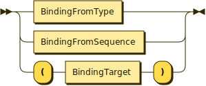
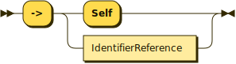
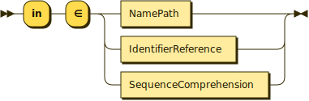
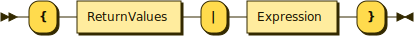
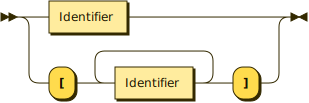

Simple Domain Modeling Language
Table of Contents
- 1. Introduction
- 2. The Surface Syntax
- 3. Capturing Model Constraints
- 4. The RDF Semantics
- 5. Walk-Through Example
- 6. Implementation and Tools
- 7. Appendix: Standard Library
- 7.1. SDML Module
- 7.2. Commonly Used Modules
- 7.2.1. Dublin Core Elements
- 7.2.2. DCMI Abstract Model
- 7.2.3. DCMI Type Vocabulary
- 7.2.4. DCMI Metadata Terms
- 7.2.5. The OWL 2 Schema Vocabulary
- 7.2.6. The RDF Concepts Vocabulary
- 7.2.7. The RDF Schema Vocabulary
- 7.2.8. Simple Knowledge Organization System Namespace
- 7.2.9. The xml Namespace
- 7.2.10. XML Schema Datatypes
- 7.3. Constraint Language Library
- 7.3.1. The Type
Type - 7.3.2. Equality and Inequality
- 7.3.3. Identifiers
- 7.3.4. Module Definition
- 7.3.5. Imports
- 7.3.6. Datatypes and Values
- 7.3.7. Sequence Types
- 7.3.8. Annotations
- 7.3.9. Structured Type Members
- 7.3.10. Entities
- 7.3.11. Entity Events
- 7.3.12. Enumerations
- 7.3.13. Structures
- 7.3.14. Disjoint Unions
- 7.3.15. Property Definitions
- 7.3.16. Formal Constraints
- 7.3.17. Constraint Sentences
- 7.3.18. Constraint Terms
- 7.3.19. Constraint Environment
- 7.3.1. The Type
- 8. Appendix: Surface Syntax to RDF
- 8.1. Whitespace
- 8.2. Comments
- 8.3. Identifiers
- 8.4. Values
- 8.5. Modules
- 8.6. Imports
- 8.7. Annotations
- 8.8. Constraints
- 8.9. Data Type Definitions
- 8.10. Entity Definitions
- 8.11. Enumeration Definitions
- 8.12. Event Definitions
- 8.13. Structure Definitions
- 8.14. Union Definitions
- 8.15. Property Definitions
- 9. Appendix: Constraints to ISO/IEC Common Logic
- 10. Appendix: UML Profile for SDML
- 11. License
- 12. Tables of Other Content
1. Introduction
The Simple Domain Modeling Language1 is a small data-oriented language for constructing, documenting, and reasoning about a conceptual domain model. For a background on domain modeling see section 1.1. At it's core SDML comprises 1. an Semantic Model whose structure and semantics are described in RDF2 by an OWL3 ontology (see section 4 for more details), and 2. a surface syntax for editing and sharing model artifacts (see section 2 for more details). Figure 1 shows the relationship between these high-level components.
This document covers both the semantic model and surface syntax representation as well as the correspondence between them. However, the primary focus of the documentation is the surface syntax as most users will be interacting with it alone.

Figure 1: Model Overview
The language uses some ideas from UML4 which is often used in the construction of such models today. However, the goal is to keep the language as small as possible, taking away some options where they don't make sense or where their use may distract from the major purpose of the model. The model also takes some of the language from Domain-Driven Design (DDD)5, namely the separation of entities (an object defined not by its attributes, but its identity) from value objects (an immutable object that contains attributes but has no conceptual identity), simply termed structures in SDML. This model does not include the following DDD as first-class concepts: aggregates, repositories, factories, or services.
1.1. Domain Modeling
Domain modeling is the process by which we develop a model of our business domain. In particular, we model what our business does and not how it is done.
There is often confusion around the use of the term Domain Model especially in regard to terms such as Data Model, Class Model, Schema and more. The rest of this section is an attempt to clarify the terminology and how the relevant modeling efforts are undertaken. This is not intended as an exhaustive review of modelling approaches, standards, or technologies and neither does it make any judgement as to the usefulness of any approach or technology.
1.1.1. Model Terminology
A model is an informative representation of an object, person or system. The term originally denoted the plans of a building in late 16th-century English, and derived via French and Italian ultimately from Latin modulus, a measure. As is common in software development the term model is overloaded and it's use can lead to confusion as people have different expectations and assumptions regarding what kind of model is being discussed. To this end we introduce some terminology here that, if simply used as model qualifiers, helps to disambiguate the purpose of any particular model.
For now we will use the following classification to partition the major purpose of different model instances.
- Data: A data model in software engineering is a representation of concepts and the relationships, constraints, rules, and operations to specify data semantics for a chosen domain of discourse. Typically it specifies relations between kinds of things, but may also include relations with individual things. It can provide sharable, stable, and organized structure of information requirements or knowledge for the domain context.
- Behavior: Behavioral languages are designed to describe the observable behavior of complex systems consisting of components that execute concurrently. These languages focus on the description of key concepts such as: concurrency, nondeterminism, synchronization, and communication.
- Process: [Business] process modeling (BPM) in business process management and systems engineering is the activity of representing processes of an enterprise, so that the current business processes may be analyzed, improved, and automated.
A common framework for defining the level of abstraction inherent to a model are the three perspectives introduced by ANSI in 1975 (introduced in section 1.3.
- Conceptual: In the field of computer science a conceptual model aims to express the meaning of terms and concepts used by domain experts to discuss the problem, and to find the correct relationships between different concepts. The conceptual model attempts to clarify the meaning of various, usually ambiguous terms, and ensure that confusion caused by different interpretations of the terms and concepts cannot occur.
- Logical: A logical data model or logical schema is a data model of a specific problem domain expressed independently of a particular database management product or storage technology (physical data model) but in terms of data structures such as relational tables and columns, object-oriented classes, or XML tags. This is as opposed to a conceptual data model, which describes the semantics of an organization without reference to technology.
- Physical: A physical data model (or database design) is a representation of a data design as implemented, or intended to be implemented, in a database management system. In the lifecycle of a project it typically derives from a logical data model, though it may be reverse-engineered from a given database implementation.
With these two classifications we can construct a simple grammar for the qualification of the term model:
Perspective = "conceptual" | "logical" | "physical" Scope = "data" | "behavior" | "process" ModelReference = Perspective, Scope "model"
1.1.2. Modeling Language/Notation
There have been a number of modeling techniques, notations, and languages over the years. The following table describes those in common use today. It is worth noting that after OMG standardization there are common meta-model underpinnings for UML and BPMN.
| Data | Behavior | Process | |
| Conceptual | UML1, Concept Map, Semantic Net | UML2, Flowchart | UML3, BPMN, EPC4 |
| Logical | UML1, EXPRESS, IDEF1X, IE5 | UML2 | BPMN |
| Physical | UML1, … | UML6, Statecharts, Petri net |
- Class and Component diagrams.
- Sequence, State, and Activity diagrams.
- Use Case and Activity diagrams.
- Event-driven Process Chains.
- Information Engineering (IE) introduced the commonly used crows-foot notation.
- Action Semantics and action languages.
UML has a built-in extension mechanism with stereotypes and profiles and data modeling concerns are often introduced with specific extensions such as stereotypes for different key types.
1.1.3. Modeling Themes
(TODO: Complete this section)
Commonality
Variability
- Inheritence
- …
- Interface and Implementation
- …
- (no term)
Scope: Breadth and Depth
1.1.4. Domain-Driven Design
Domain-driven design (DDD) is a software design approach focusing on modeling software to match a domain according to input from that domain's experts. Under domain-driven design, the structure and language of software code (class names, class methods, class variables) should match the business domain.
Within this approach the domain model is usually a conceptual or logical data model that describes the key entities that comprise the domain. The representation of this model can be any of the languages described above although UML is the common. The discipline of domain modeling is unique in it's focus on deriving data/information models directly from the business and stresses the involvement of domain experts from the business in the development of models. Additionally the literature describes specific kinds of model entities and their unique semantics, Entities, Value Objects, Events, and Aggregates, etc. which help focus conversations on key modeling concepts such as identity, lifecycle, and ownership.
Thus, a Domain Model is a conceptual (UML or Ontology) or logical (UML) data model developed according to a specific methodology (DDD) and employing a specific meta-language (UML Profile).
Some of the defined kinds, Repository, Factory, and Service are lower-level concerns and the lack of a clear separation between different levels of abstraction is one criticism of the method. Additionally terms such as Entity as defined by DDD are not entirely compatible with the use in pre-existing methods such as E/R modeling.
However, the method's focus on the business and it's vocabulary as the basis for models is valuable in an effort such as the Universal API where the model will represent our business model in different presentations.
1.2. Domain-Related Models
Domain modeling is often an isolated activity in that the created model is applied in a singular fashion. However, there are other modeling activities that share similar aims, whose subjects intersect, and which are also conceptual or logical data models. Two commonly developed artifacts are:
- Data Catalogs
- These models describe data in data stores (although they don't have to) and describe tables and similar structures comprised of data elements. The set of data element definitions, commonly referred to as a data dictionary, go beyond simple data typing to include privacy, security, governance, lineage, and provenance classification.
- Business Glossaries
- These models have
Table 1 contains a summary of characteristics of these two artifacts compared to a domain model. Note that the column "Open/Closed"captures the World Assumption of typical artifacts/processes/products in each row – see section 4 for more information.
| Primary | Secondary | Open/Closed | |
|---|---|---|---|
| Data Dictionary | Data Element | Table, Dataset, Job | Semi-Closed |
| Business Glossary | Vocabulary, Term | Relations, Labels | Closed |
| Domain Model | Entities | Structures | Closed |
| SDML Domain Model | Entities | Properties, Structures | Open |
Given that

Figure 2: Model Foundations
1.3. Domain Modeling's Role in Development
The software development process may be described as the management of abstraction; requirements are an abstraction representing actual needs of some group of individuals, a whiteboard drawing may be an (informal) abstraction of a system design, a UML model may be a formal abstraction of system or component dependencies, and so forth. We can stratify these levels of abstraction as shown in figure 3 although almost any such stratification will crash headlong into any number of detractors.

Figure 3: Artifact Layers in Software Development
While this figure groups these levels into three groups, abstract models, concrete models, and artifacts this is again somewhat arbitrary given that even the executable deployment artifacts are an abstraction concerning how the operating system and CPU will layout and execute our application.
Figure 4 demonstrates the key element of a Model-Driven Development6 style, namely the transformation between models and between models and other development artifacts. In this case we use the terms introduced above where we transform from a more abstract model to a more concrete model or directly to other artifacts. The transformation also has to have a set of rules that define the selection and projection of elements from the source model.

Figure 4: Model Transformations
Example:
In the following example we show a tree of transformations from a domain model through three intermediate models to various artifacts such as SQL, code, and Thrift7.

Figure 5: Example Model Transformations
1.4. Goals
The purpose of SDML is to be the source of truth concerning the enterprise's domain, and the root of the tree shown in figure 5. It needs to provide an abstraction that is expressive enough to model the structure of entities that define the domain, while providing enough detail to be useful in transforming to the next level of more concrete models and artifacts.
SDML has two key tenets that help in this goal:
- Provide the ability to capture correct, but incomplete models to allow fast capture of key information first.
- Provide an extension mechanism that goes beyond marker values and allows semantic extension when necessary.
Additionally, by focusing first on a text-based syntax we provide a resource representation that fits well into most software processes, it can be version controlled, it's diff-friendly, you can use code-reviews and pull-requests to build governance processes. While this document does not preclude alternative representations, including visual ones, the surface syntax is the canonical authoring form.
(TODO: Add data dictionary discussion)
(TODO: Add vocabulary discussion)
1.5. Non-Goals
(TODO: Complete this list)
- Versioning
- Object Modeling
- Behavior Modeling
- Standardization
2. The Surface Syntax
This section describes the SDML surface syntax, a syntax intended to look and feel like a programming language but with extensibility provided by it's underlying RDF and OWL foundation. The goal of the following syntax is to allow for rapid capture of domain information but allowing elaboration of details over time. To this end we have made language features optional wherever possible such that the minimum information neccessary is required to build a valid model. This document will use the terms valid to denote a model that has no syntactic errors and complete to denote a valid model that has no short-form, or incomplete, model elements.
For the complete grammar, and notes on BNF notation, see section 2.9.
2.1. Whitespace and Comments
This grammar chooses to use the JavaScript regular expression character class \s which includes the following values,
including all Unicode whitespace.
Whitespace ::=
[^\f\n\r\t\v#x20#xa0#x1680#x2000#x200a#x2028#x2029#x202f#x205f#x3000#xfeff]
Comments follow Lisp-like forms, starting with a semi-colon character and continuing to the end of line. Comments are intended to capture only information regarding the file contents and not model contents. Because of this, parsers are not required to capture comments, and tools are not required to emit comments back into changed files. For model-related comments relevant annotations should be attached to the model elements.
LineComment ::= ";" [^\r\n]*

; <- comments start here and end here ->
In the following example a tool reading the following file is not required to preserve the comment, which in this case
is OK as the editorialNote is preserved and correctly used for the same purpose.
module foo is import [dc skos] ; Should come up with a better name. @skos:prefLabel = "Foo"@en @dc:description = "Here's a descriptive comment" @skos:editorialNode = "Someone should fix the name" end
2.2. Identifiers
An identifier is a string of characters corresponding to the Unicode General Category8 Lu (an uppercase letter),
Ll (a lowercase letter), Nd (decimal digit), or the Unicode Low Line (underscore, "_", U+005F) character. Specifically
an identifer must start with and must begin and end with a letter such that the low line character may only appear
within the identifier. The following is the BNF description of the identifier syntax.
Identifier ::= IdentifierInitial IdentifierChar* ( "_" IdentifierChar+ )*

IdentifierInitial ::= UC_LETTER_UPPER | UC_LETTER_LOWER

IdentifierChar ::= IdentifierInitial | UC_NUMBER_DECIMAL

Naming Conventions:
- Module Name
- lower Camel Case; i.e.
xsd,skos,bank, orcustomer. In general this should be a broad noun. - Structure/Entity/Event/Enum Name
- Upper Camel Case; i.e.
Customer,Account,Address, orName. In general these are nouns related to, and often narrower than, the module name. - Data Type Name
- Upper Camel Case; i.e.
ShortString,AccountNumber, orSocialSecurityNumber. In general these are broad nouns, with either a property noun suffix as inAccountNumberor a qualifier noun prefix as inShortString. Do not create capitalized acronym (SSN) or abbreviation (ID) forms unless these are universally understood within the domain. - Type Member Name
- lower Camel Case; i.e.
street,accountName, orcurrentValue. As in data type definitions these are broad nouns, with either a property noun suffix as inaccountNumberor a qualifier noun prefix as inshortName. These are commonly simply the lower Camel Case version of the corresponding type name. - Enum and Union Variant Name
- Upper Camel Case is the preferred, although SHOUTY CASE is acceptable.
2.2.1. Qualified Identifier
A qualified identifier comprises a module identifier followed by the Colon (":", U+003A) character and the identifier of a
member within that module.
QualifiedIdentifier ::= Identifier ":" Identifier

A type reference may be to a locally defined type by an identifier, or an imported type by a qualified identifier.
IdentifierReference ::= QualifiedIdentifier | Identifier

2.3. Module Definition and Imports
A module is the container for a set of type definitions and typically models a Domain or Sub-domain. A single resource (in the web sense of some thing identified by an IRI) may contain only a single module. Therefore, the smallest valid resource is one with an empty model.
Module ::= "module" Identifier ModuleBase? ModuleBody

An empty module (listing 3), specifically a module with an empty body which is the content
between the keywords is and end.
module example is end
2.3.1. The base Specifier
ModuleBase ::= "base" IriReference

The keyword base provides the base IRI for the module and corresponding RDF schema or OWL ontology. This corresponds to
the use of the xml:base attribute in RDF/XML and the @base directive in Turtle and SPARQL9. This IRI is used
as a prefix for defined type names so that each type has a unique IRI. The example in listing
4 demonstrates the assigned IRI identifier for the structure type named Thing.
module example base <https://example.org/rdf/example#> is structure Thing ;; IRI: https://example.org/rdf/example#Thing end
Module URI Resolution
Each module has an identifer/name defined within the module source as well as a base URI used to assign URIs to every model element within the resource. This URI identifier for each model element necessary as the identifier for the corresponding RDF resource(s). Our first problem is to determine the base URI for the module,as follows:
- If the module has a
basespecifier it MUST be used as the module URI. - If the reader has access to an SDML catalog file (For details of the catalog file format see appendix 6.8), a matching catalog entry MUST be used as the module URI.
- A URI is calculated for the module using the
file:scheme and the file path relative to a project root.
Considering the following simple module in the file vehicle.sdm.
module vehicle is end
If the following file is in the same directory as the vehicle module it is possible to
{ "base": "https://example.org/rentals/", "entries": { "rentals": { "item": { "relative_name": "vehicle#", "relative_path": "vehicle-v1.sdm" } } } }
2.3.2. Importing Modules and Members
ModuleBody ::= "is" ImportStatement* Annotation* Definition* "end"

To import types from other modules you add one or more import statements to the module body. Each statement may reference one or more module names or the qualified name of a type within a module.
ImportStatement ::= "import" ( Import | "[" Import+ "]" )

Import ::= MemberImport | ModuleImport

ModuleImport ::= Identifer

MemberImport ::= QualifiedIdentifier

The module in listing 5 contains a single import statement referencing the module named xsd
making it's members visible in the qualified form xsd:*.
module example is import xsd end
The module in listing 6 contains a single import statement referencing the member named integer from
the module xsd making it visible.
module example is import xsd:integer end
To reduce the number of import statements a list of identifiers, both module and member, may be referenced as a list.
Listing 7 makes the members author and title from the module dc visible. Lists in SDML start
with the Left Square Bracket ("[", U+005B) character and end with the Right Square Bracket ("]", U+005D) character with
no separator character between members of the list.
module example is import [ dc:title dc:author ] end
2.3.3. Definitions

Figure 6: The SDML Type Model
Definition ::=
DataTypeDef | EntityDef | EnumDef | EventDef | StructureDef | UnionDef | PropertyDef

2.4. Data Types and Values
A data value is either a simple value, a value constructor expression, an identifier reference or a list of values.
Value ::=
SimpleValue | ValueConstructor | IdentifierReference | ListOfValues

The inclusion of an identifier reference as a value allows for annotations whose value is another model element.
2.4.1. Simple Values
The core data types supported by SDML are boolean, integer, decimal, double, string, (Language-Tagged String), and iri
for IRI References. Values corresponding to these types are termed simple values.
SimpleValue ::=
String | Double | Decimal | Integer | Boolean | IriReference

A Boolean value in SDML is either the keyword true or false.
Boolean ::= Tautology | Contradiction

Tautology ::= "true" | "⊤"

Contradiction ::= "false" | "⊥"

An unsigned value in SDML is
Unsigned ::= Zero | NonZero ASCII_DIGIT*

Zero ::= [0]

NonZero ::= [1-9]

An Integer value in SDML is a string of ASCII decimal digits, without leading zeros; zero, 0, is a valid value however
00 and 01 are not. The Integer type corresponds to a 64-bit signed integer number.
Integer ::= NumericSign? Unsigned

NumericSign ::= [+-]

A Decimal value in SDML is an integer-like value, followed by the Full Stop (".", U+002E) character and another
integer-like value. The Decimal type corresponds to a 128-bit representation of a fixed-precision decimal number.
Decimal ::= Integer "." ASCII_DIGIT+
A Double value in SDML is a decimal-like value followed by a lower or upper case letter E (Latin Small Letter E, "e",
U+0065 or Latin Capital Letter E, "E", U+0045), a sign character (Hyphen Minus, "-", U+002D or Plus Sign, "+", U+002B)
and an integer-like value. The Double type is a 64-bit floating point number (specifically, the "binary64" type defined
in IEEE 754-2008).
Double ::= Decimal ExponentChar NumericSign? Integer

ExponentChar ::=[eE]

A String value in SDML is a sequence of Unicode characters starting and ending with a Quotation Mark ('"', U+0022) character. While
standard escape sequences allow for embedding non-printing characters. The form \u{XXXX}, where X is a single hex digit,
allows for the inclusion of any Unicode characters by their code point. Note that this form requires a minimum of 2 and
a maximum of 6 such digits. In addition,the following single-character escape characters are supported.
NotAllowed ::= [^\#x00-#x08#x0B-#x1F#x7F] QuotedString ::= "\"" ( Escape | NotAllowed )* "\"" String ::= QuotedString LanguageTag?


HexPair ::= HexDigit HexDigit CharacterEscape ::= [\"\\/abefnrtv] UnicodeEscape ::= "u{" HexPair ( HexPair ( HexPair )? )? "}" Escape ::= "\\" ( CharacterEscape | UnicodeEscape )


Note also that strings allow literal newlines and do not require they be present in escaped form. This means that a string literal supports multiline forms.
| Escape Character | Character Name (Common Name) | Unicode Equivalent |
|---|---|---|
\" |
Quotation Mark | \u{0022} |
\/ |
Solidus (Forward Slash) | \u{002F} |
\\ |
Reverse Solidus (Backslash) | \u{005C} |
\a |
Bell | \u{0007} |
\b |
Backspace | \u{0008} |
\e |
Escape | \u{001B} |
\f |
Form Feed (Page Break) | \u{000C} |
\n |
Line Feed (New Line) | \u{000A} |
\r |
Carriage Return | \u{000D} |
\t |
Character Tabulation (Horizontal Tab) | \u{0009} |
\v |
Line Tabulation (Vertical Tab) | \u{000B} |
A Language-Tagged String value in SDML is a String as above but immediately followed by a Commercial At ("@", U+0040)
character and an unquoted string of characters that conform to a language identifier. Note that both components of such
a string contribute to equality tests, so that "abc"@en is not equal to "abc"@fr.
LanguageTag ::=
"@" LanguageTagPrimary
LanguageTagExtended?
LanguageTagScript?
LanguageTagRegion?

The primary language is one of:
- a two letter language code from ISO 639-1,
- a three letter code from ISO 639-2.
LanguageTagPrimary ::=
ASCII_LETTER_LOWER ASCII_LETTER_LOWER ASCII_LETTER_LOWER?

The extended language is zero to three selected three letter ISO 639-2 codes.
LanguageTagExtended ::=
"-" ASCII_LETTER_UPPER ASCII_LETTER_UPPER ASCII_LETTER_UPPER

The language script is an ISO 15924 four letter code in title case.
LanguageTagScript ::=
"-" ASCII_LETTER_UPPER ASCII_LETTER_LOWER
ASCII_LETTER_LOWER ASCII_LETTER_LOWER

The language region is either a two letter ISO 3166-1 code or a three digit UN M.49 code.
LanguageTagRegion ::=
"-" ( ( ASCII_LETTER_UPPER ASCII_LETTER_UPPER )
| ( ASCII_DIGIT ASCII_DIGIT ASCII_DIGIT ) )

An IRI Reference value in SDML is a value IRI value, either absolute or relative, between a Less-Than Sign ("<", U+003C)
character and a Greater-Than Sign (">", U+003E) character. IRI references are more permissive in the SDML grammar than
the Turtle10 language.
IriReference ::=
"<" ( [^<>\"{}|^`\#x00-#x20] | UnicodeEscape )* ">"

See section 8.4.1 for a more detailed description of values, literals, and data types.
2.4.2. Value Constructors
While the value 101 is defined to be an Integer literal, in the presence of sub-types how do you specify the type of a
literal? To accomplish this a value constructor allows for specifying the precise type, or casting a value to a specific
type.
The syntax appears as a function call with a type reference followed by a valid simple value surrounded by the Left
Parenthesis ("(", U+0028) and Right Parenthesis (")", U+0029) characters. The literal value MUST be valid for the
referenced type, or one of it's super-types.
ValueConstructor ::= IdentifierReference "(" SimpleValue ")"

Here we assert that the value 1 is an unsigned rather than the default signed integer.
module example is import ex @ex:thing = xsd:unsigned(1) end
You can ignore the syntax of @ex:thing which is an annotation, see section 2.5, used to ensure the syntax is
complete for all examples.
2.4.3. Value Lists
As stated in section 2.3, lists in SDML start with the Left Square Bracket ("[", U+005B)
character and end with the Right Square Bracket ("]", U+005D) character with no separator character between members of
the list. Value lists are, as one might expect, lists of values and specifically of simple values. Value lists are also
heterogeneous and may contain elements of different types.
ListOfValues ::=
"[" ( SimpleValue | ValueConstructor | IdentifierReference )+ "]"

module example is import ex @ex:thing = [ "yes" "no" "maybe" ] end
2.4.4. Defining Data Types
A datatype definition introduces a new simple data type by restriction of some existing base type.
DataTypeDef ::=
"datatype" Identifier "<-" DataTypeBase AnnotationOnlyBody?

DataTypeBase ::= IdentifierReference | BuiltinSimpleType

Listing 10 shows the type restriction operator, <-, defining a new type named name as a restriction on
the existing XML Schema data type xsd:string.
module example is import ex datatype Name <- string end
While such a type is useful for conveying semantic meaning with types it doesn't provide any actual restriction on the value space of the type. This is accomplished by using a subset of the facets described in XML Schema part 2 to specify constraints on the new type. For example, in listing 11 we now see that the Name type is a string whose length is between 5 and 25 characters only.
module example is import ex datatype Name <- string is @xsd:minLength = 5 @xsd:maxLength = 25 end end
From OWL 2 Web Ontology Language Quick Reference Guide11:
| Facet | Value | Applicable Datatypes | Explanation |
|---|---|---|---|
xsd:minInclusive, xsd:maxInclusive, xsd:minExclusive, xsd:maxExclusive |
literal in the corresponding datatype | Numbers, Time Instants | Restricts the value-space to greater than (equal to) or lesser than (equal to) a value |
xsd:minLength, xsd:maxLength, xsd:length |
Non-negative integer | Strings, Binary Data, IRIs | Restricts the value-space based on the lengths of the literals |
xsd:pattern |
xsd:string literal as a regular expression |
Strings, IRIs | Restricts the value space to literals that match the regular expression |
rdf:langRange |
xsd:string literal as a regular expression |
rdf:PlainLiteral |
Restricts the value space to literals with language tags that match the regular expression |
2.4.5. The Built-in Simple Types
In the preceding sections we introduced the set of built-in simple types: string, double, decimal, integer, boolean, and
iri. These are keywords in SDML and have specific rules applied when parsing. Each keyword is translated into a
qualified identifier where the module name is the reserved name sdml. This set of standard library types have an
underlying RDF/OWL equivalence relationship to a subset of the XML Schema datatypes, all shown in table
4.
BuiltinSimpleType ::=
"string" | "double" | "decimal" | "integer" | "boolean" | "iri"

| Type Keyword | Qualified Identifier | Equivalent XML Schema Datatype |
|---|---|---|
boolean |
sdml:boolean |
xsd:boolean |
decimal |
sdml:decimal |
xsd:decimal |
double |
sdml:double |
xsd:double |
integer |
sdml:integer |
xsd:integer |
iri |
sdml:iri |
xsd:anyURI |
string |
sdml:string |
xsd:string or rdf:langString |
2.5. Annotations
Annotations allow for the assertion of facts attached to model elements that go beyond what is possible to describe in the core syntax. Annotations are available in two forms, annotation properties, and constraints.
Annotation ::= AnnotationProperty | Constraint

AnnotationOnlyBody ::= "is" Annotation+ "end"

2.5.1. Annotation Properties
Annotation Properties are an extension mechanism that interacts directly with the underlying RDF representation of the subject model element. While these may look like Java annotations, Python decorators, or Rust attributes it is more powerful in that it can express arbitrary statements about the model element. An SDML annotation starts with the symbol "@" and then has an identifier that resolves to an OWL annotation property (see section 2.5.3 for the detailed rules), and a value for the corresponding property range.
AnnotationProperty ::= "@" IdentiferReference "=" Value

Example:
The following example demonstrates a common annotation property attached to a module.
module example is import skos @skos:note = "This is an example annotation" end
Example:
module example is import skos @skos:prefLabel = [ "example"@en "exemple"@fr "例子"@zh-CH ] end
Example:
module example is import [ dc skos ] @dc:description = "This is an example module, with two annotations" @skos:prefLabel = "Example Module"@en end
From OWL Web Ontology Language Reference, Appendix E: Rules of Thumb for OWL DL ontologies:
If a property
ais used where an annotation property is expected then it should either be one of the built in annotation properties (owl:versionInfo,rdfs:label,rdfs:comment,rdfs:seeAlso, andrdfs:isDefinedBy) or there should be a triple:
a rdf:type owl:AnnotationProperty
2.5.2. Constraints
This section will only briefly introduce constraints as section 3 provides a detailed description. The first example, in listing 15, provides an informal constraint in that it is simply a string which is useful to readers but cannot be verified.
Constraint ::= InformalConstraint | FormalConstraint

InformalConstraint ::= "=" QuotedString ControlledLanguageTag?

ControlledLanguageTag ::=
"@" LanguageTagPrimary ControlledLanguageScheme?
ControlledLanguageScheme ::=
"-" ASCII_LETTER ASCII_LETTER ASCII_LETTER
ASCII_LETTER? ASCII_LETTER? ASCII_LETTER?
ASCII_LETTER? ASCII_LETTER? ASCII_LETTER?


module rental is assert name_form = "All definition names MUST start with 'Rental'" end
While informal constraints are not validated in any way, given the ambiguities of human language a controlled language is a useful alternative.
A formal constraint on the other hand may be verified, but takes more work to structure correctly. The example in listing 16 example above by methodically checking every definition and any members therein.
module rental is assert name_form is forall d in definitions(self) ( suffix(name(d) "Rental") ) end end
2.5.3. Defining RDF Classes and Properties
In general only properties that have an RDF type of owl:AnnotationProperty, or are sub-properties of such a property,
may appear as annotations. This maintains the assertion that they are annotations of their subject and allows the use of
a range of pre-defined annotation properties from RDF, RDF Schema, OWL, and the Dublin Core Metadata Initiative
(DCMI)12.
For example the annotation property rdfs:comment is defined in the following manner allowing it's use on any resource
and with a value that may be any literal.
rdfs:comment rdf:type rdf:Property, owl:AnnotationProperty ; rdfs:isDefinedBy <http://www.w3.org/2000/01/rdf-schema#> ; rdfs:label "comment" ; rdfs:comment "A description of the subject resource." ; rdfs:domain rdfs:Resource ; rdfs:range rdfs:Literal .
To allow the standard library to define SDML equivalents of such properties it is necessary to provide a mechanism to
use non-annotation properties such as rdf:type, rdfs:domain, and rdfs:range as demonstrated in the example above. To
allow this, if a model element has the property rdf:type then the transformation from that element to RDF does not use
any of the transformations described here but an explicit mapping from only the provided properties.
Rewriting the RDF from listing 17 into SDML results in the definition in listing 18.
module rdfs is ;; a lot of things elided. structure comment is @rdf:type = [ rdf:Property owl:AnnotationProperty ] @isDefinedBy = <http://www.w3.org/2000/01/rdf-schema#> @label = "comment" @comment = "A description of the subject resource." @domain = Resource @range = Literal end end
The following are commonly used RDF and OWL definition properties.
rdf:type–rdfs:domainandrdfs:range–rdfs:subClassOfandrdfs:subPropertyOf–owl:equivalentClassandowl:equivalentProperty–owl:inverseOf–owl:disjointWith–owl:FunctionalProperty,owl:InverseFunctionalProperty,owl:SymmetricPropertyandowl:TransitiveProperty–
2.6. Structured Types
Structured types fall into two primary categories, Product types and Sum types. Product types have named and typed
Members and in SDML these are structures, entities and events. Sum types on the other hand have Variants and in SDML
these are enumerations and disjoint unions. In the surface syntax product type bodies are introduced by the keyword is
whereas sum type bodies are introduced by the keyword of.
2.6.1. Members
Product type members fall into the following categories.
- Identity
- A particular kind of member only available on entities, and required by them, to name the identifier for that entity type.
- By-Value
- A reference to a value type, i.e. Enumeration, Event, or Structure. Such a member may indicate the cardinality of the target.
- By-Reference
- A reference to an Entity type. Such a member may indicate the cardinality of the target as well as the name of the inverse member on the target type.
IdentityMember ::=
"identity" Identifier
( PropertyMember | ( TypeExpressionTo AnnotationOnlyBody? ) )

MemberByValue ::=
Identifier
( PropertyMember | ( TypeExpressionTo AnnotationOnlyBody? ) )

MemberByReference ::=
"ref" Identifier
( PropertyMember | ( InverseName? TypeExpressionTo AnnotationOnlyBody? ) )

InverseName ::= "(" Identifier ")"

PropertyMember ::= "as" Identifier

For identity, by-value, and by-reference members the general syntax uses the type reference operator, name -> type, with
additional keywords and cardinality included as follows.
| Kind | Keyword | To-Cardinality | Target Types |
|---|---|---|---|
| Identity | identity |
No | Enumeration, Event, Structure, or Union |
| By-Value | Yes | Enumeration, Event, Structure, or Union | |
| By-Reference | ref |
Yes | Entity |
Additionally, to allow for the capture of member names before the elaboration of all types the language allows for the
target type to be replaced with the keyword unknown. This marks the member, and by extension it's owning type, as
incomplete.
TypeExpression ::= "->" TypeReference TypeExpressionTo ::= "->" Cardinality? TypeReference TypeReference ::= UnknownType | IdentifierReference | BuiltinSimpleType UnknownType ::= "unknown"


The cardinality of a member is specified as a range operation with a minimum and maximum number of occurrences specified.
- The form
{1..3}specifies a cardinality of 1 to 3 inclusive, or \([1,3]\) in interval notation. - The form
{1..}specifies a minimum of 1 occurrences an unbounded maximum, or \([1,\infty]\) in interval notation. - The form
{1}specifies that 1 is both the minimum and maximum value, or \([1,1]\) in interval notation, commonly termed a degenerate interval.
Cardinality ::= "{" Unsigned CardinalityRange? "}" CardinalityRange ::= ".." Unsigned?


Example:
module example is structure Account is accountId as default name -> string end end
2.6.2. Variants
Sum type variants fall into the following categories.
- Value Variant
- A member within an enumeration that specifies a numeric value for each member rather than a type.
- Type Variant
- A type reference that is a unique variant of a disjoint union.
The details of the two variant types are in the sections on enumerations and disjoint unions following.
2.6.3. Structures
A structure is a product type that is composed of named and typed members. A structure is therefore akin to a record type, a table in data modeling, or a class in object modeling.
StructureDef ::= "structure" Identifier StructureBody?

Example:
As only the keyword structure and the identifier are required, the listing 20 is therefore a
valid model.
module example is structure Length end
The structure Length in listing 20 is valid but considered incomplete. Adding a body to the
structure, between is and end, makes it complete even if it has no actual members. In listing
21 the structure Length is now complete.
StructureBody ::= "is" Annotation* ( MemberByValue | StructureGroup )* "end"

Example:
module example is structure Length is @skos:prefLabel = "Length"@en end end
Example:
Listing 22 adds the members value and unit and their corresponding types.
module example is structure Length is @skos:prefLabel = "Length"@en value -> Decimal unit -> DistanceUnit end end
In listing 23 we see a more complex structure with both members and groups.
StructureGroup ::= "group" Annotation* MemberByValue+ "end"

Example:
module example is structure Account is @skos:prefLabel = "Customer Account"@en group @skos:prefLabel = "Metadata" created -> xsd:dateTime lastModified -> xsd:dateTime end group @skos:prefLabel = "Customer Information" ref customer -> {1..1} Customer end end end
2.6.4. Entities
EntityDef ::= "entity" Identifier EntityBody?

Example:
module example is entity Person end
The entity Person in listing 24 is valid but incomplete.
EntityBody ::=
"is" Annotation* IdentityMember ( EntityMember | EntityGroup )* "end"

EntityGroup ::= "group" Annotation* EntityMember+ "end"

EntityMember ::= MemberByValue | MemberByReference

Example:
module example is entity Person is identity id -> PersonId end end
The identity member is a required part of the entity definition, it not only tells us what type represents the unique
identifier for this entity but is also used in ref members and event sources (see section 2.6.5). In the
case of a ref member the target entity, in our example Person is not included in the entity's structure, it's identifier
type, PersonId is instead.
module example is entity Person is identity id -> PersonId ref emergency_contact (emergency_contact_for) -> {0..2} Person is @dc:description = "Emergency contact person" end end end
2.6.5. Entity Events
Entity Events, or simply Events, model notifications generated by an entity most often representing a state change in the entity.
As such a source reference denotes the entity which generates this event. Any expansion of the event structure must include the
identifiers of the source entity.
EventDef ::=
"event" Identifier "source" IdentifierReference StructureBody?

Example:
module example is event PersonNameChanged source Person end
With the expansion of the source entity the event definition above is logically equivalent to the following structure.
module example is structure PersonNameChanged is id -> PersonId is @sdml:identifies = Person end end end
As we have seen before, the event PersonNameChanged in listing 27 is valid but incomplete.
Example:
The following is a valid and complete event definition with two structure members.
module example is event PersonNameChanged source Person is fromValue -> Name toValue -> Name end end
2.6.6. Enumerations
An enumeration is a numeric type that expressly names the values it may take. This is a restricted form of the enum type
found in most languages as not only must all names be unique but all names must specify a value and all values must also
be unique. Note also that the keyword of and not is starts an enumeration body.
EnumDef ::= "enum" Identifier EnumBody?

Example:
module example is enum DistanceUnit end
The enumeration DistanceUnit in 29 is valid but incomplete. Completion of the enumeration requires
the addition of a body with enumeration variants.
EnumBody ::= "of" Annotation* ValueVariant+ "end"

ValueVariant ::= Identifier "=" Unsigned AnnotationOnlyBody?

Example:
The following demonstrates a valid and complete enumeration.
module example is enum DistanceUnit of Meter = 1 Foot = 2 end end
2.6.7. Disjoint Unions
A disjoint, or discriminated, union is a mechanism to allow for a selection of disjoint types to be treated as a single
type. As such the variants of the union are simply type references, although they do allow annotations. Note also that
the keyword of and not is starts a union body.
UnionDef ::= "union" Identifier UnionBody?

Example:
module example is union VehicleClass end
The union VehicleClass in 31 is valid but incomplete. Completion of the union requires the addition
of a body with type variants.
UnionBody ::= "of" Annotation* TypeVariant+ "end"

TypeVariant ::= IdentifierReference TypeVariantRename? AnnotationOnlyBody?

TypeVariantRename ::= "as" Identifier

Example:
The following is a valid and complete example with three type variants and one that is renamed from Van to LittleTruck.
module example is union VehicleClass of Car Truck Van as LittleTruck end end
2.7. Property Definitions
SDML provides for a data dictionary, or element-first, style of model capture where key properties of the domain are defined and annotated in a stand-alone form. These are often key identifiers and other shared properties
PropertyDef ::= "property" Identifier PropertyBody?

PropertyBody ::= "is" Annotation* PropertyRole+ "end"

Example:
module example is property account_id end
The property account_id in 33 is valid but incomplete. Completion of the property requires the
addition of a body with roles defined.
PropertyRole ::=
Identifier ( "ref" Cardinality )? TypeExpressionTo AnnotationOnlyBody?

Example:
The following is a valid and complete example.
module example is property accountId is identifier -> {1} account:AccountId is @skos:definition = "a"@en end reference ref {1} -> {1} account:AccountId end end
2.8. Common Questions
2.8.1. Why are Enumerations and Unions distinct?
2.8.2. When to use Property Definitions
module example is import [ skos xsd ] datatype AccountId <- xsd:long datatype ExternalAccountId <- uri structure ChildAccountId is parent -> AccountId child -> AccountId end union AllAccountIds of AccountId, ExternalAccountId, ChildAccountId end end
module example is import [ skos xsd ] property account_id is internal -> {1} xsd:long is @skos:definition = "This is our internal representation."@en end external -> {1} url is @skos:definition = "This is our external representation for customers."@en end child -> {2} xsd:long end entity Account is identity account_id as internal end end
2.8.3. How to model Variability
Discuss role of unions in modeling variability
2.9. Complete Surface Syntax Grammar
The grammar of the surface syntax is presented in Extended Backus–Naur form (EBNF)13. The addition of a character literal
range operation .. reduces the number of single character alternatives for clarity. There are also a set of pre-defined
terminals such as ASCII_DIGIT, ASCII_HEX_DIGIT, UC_LETTER_UPPER, and UC_LETTER_LOWER used to simplify character ranges.
While there are many variations14 of EBNF in existence, including multiple standardized forms, the specific form
used here follows the notation described the W3C Extensible Markup Language (XML) 1.0 (Fifth Edition), section 6
Notation.
Module ::= "module" Identifier ModuleBase? ModuleBody ModuleBase ::= "base" IriReference ModuleBody ::= "is" ImportStatement* Annotation* Definition* "end" MemberImport ::= QualifiedIdentifier ModuleImport ::= Identifer Import ::= MemberImport | ModuleImport ImportStatement ::= "import" ( Import | "[" Import+ "]" ) Annotation ::= AnnotationProperty | Constraint AnnotationProperty ::= "@" IdentiferReference "=" Value Constraint ::= InformalConstraint | FormalConstraint Definition ::= DataTypeDef | EntityDef | EnumDef | EventDef | StructureDef | UnionDef | PropertyDef DataTypeDef ::= "datatype" Identifier "<-" DataTypeBase AnnotationOnlyBody? DataTypeBase ::= IdentifierReference | BuiltinSimpleType AnnotationOnlyBody ::= "is" Annotation+ "end" EntityDef ::= "entity" Identifier EntityBody? EntityBody ::= "is" Annotation* IdentityMember ( EntityMember | EntityGroup )* "end" EntityGroup ::= "group" Annotation* EntityMember+ "end" EntityMember ::= MemberByValue | MemberByReference EnumDef ::= "enum" Identifier EnumBody? EnumBody ::= "of" Annotation* ValueVariant+ "end" ValueVariant ::= Identifier "=" Unsigned AnnotationOnlyBody? EventDef ::= "event" Identifier "source" IdentifierReference StructureBody? StructureDef ::= "structure" Identifier StructureBody? StructureBody ::= "is" Annotation* ( MemberByValue | StructureGroup )* "end" StructureGroup ::= "group" Annotation* MemberByValue+ "end" UnionDef ::= "union" Identifier UnionBody? UnionBody ::= "of" Annotation* TypeVariant+ "end" TypeVariant ::= IdentifierReference TypeVariantRename? AnnotationOnlyBody? TypeVariantRename ::= "as" Identifier PropertyDef ::= "property" Identifier PropertyBody? PropertyBody ::= "is" Annotation* PropertyRole+ "end" PropertyRole ::= Identifier ( "ref" Cardinality )? TypeExpressionTo AnnotationOnlyBody? PropertyMember ::= "as" Identifier IdentityMember ::= "identity" Identifier ( PropertyMember | ( TypeExpressionTo AnnotationOnlyBody? ) ) MemberByValue ::= Identifier ( PropertyMember | ( TypeExpressionTo AnnotationOnlyBody? ) ) MemberByReference ::= "ref" Identifier ( PropertyMember | ( InverseName? TypeExpressionTo AnnotationOnlyBody? ) ) TypeExpression ::= "->" TypeReference TypeExpressionTo ::= "->" Cardinality? TypeReference TypeReference ::= UnknownType | IdentifierReference | BuiltinSimpleType UnknownType ::= "unknown" Cardinality ::= "{" Unsigned CardinalityRange? "}" CardinalityRange ::= ".." Unsigned? InverseName ::= "(" Identifier ")" Value ::= SimpleValue | ValueConstructor | IdentifierReference | ListOfValues BuiltinSimpleType ::= "string" | "double" | "decimal" | "integer" | "boolean" | "iri" SimpleValue ::= String | Double | Decimal | Integer | Boolean | IriReference Boolean ::= Tautology | Contradiction Tautology ::= ( "true" | "⊤" ) Contradiction ::= ( "false" | "⊥" ) NumericSign ::= [+-] Zero ::= [0] NonZero ::= [1-9] Unsigned ::= Zero | NonZero ASCII_DIGIT* Integer ::= NumericSign? Unsigned Decimal ::= Integer "." ASCII_DIGIT+ ExponentChar ::= [eE] Double ::= Decimal ExponentChar NumericSign? Integer HexPair ::= ASCII_HEX_DIGIT ASCII_HEX_DIGIT Escape ::= "\\" ( CharacterEscape | UnicodeEscape ) CharacterEscape ::= [\"\\/abefnrtv] UnicodeEscape ::= "u{" HexPair ( HexPair ( HexPair )? )? "}" NotAllowed ::= [^\"\#x00-#x08#x0B-#x1F#x7F] QuotedString ::= "\"" ( Escape | NotAllowed )* "\"" LanguageTag ::= "@" LanguageTagPrimary LanguageTagExtended? LanguageTagScript? LanguageTagRegion? LanguageTagPrimary ::= ASCII_LETTER_LOWER ASCII_LETTER_LOWER ASCII_LETTER_LOWER? LanguageTagExtended ::= "-" ASCII_LETTER_UPPER ASCII_LETTER_UPPER ASCII_LETTER_UPPER LanguageTagScript ::= "-" ASCII_LETTER_UPPER ASCII_LETTER_LOWER ASCII_LETTER_LOWER ASCII_LETTER_LOWER LanguageTagRegion ::= "-" ( ( ASCII_LETTER_UPPER ASCII_LETTER_UPPER ) | ( ASCII_DIGIT ASCII_DIGIT ASCII_DIGIT ) ) String ::= QuotedString LanguageTag? IriReference ::= "<" ( [^<>\"{}|^`\#x00-#x20] | UnicodeEscape )* ">" ValueConstructor ::= IdentifierReference "(" SimpleValue ")" ListOfValues ::= "[" ( SimpleValue | ValueConstructor | IdentifierReference )+ "]" IdentifierInitial ::= UC_LETTER_UPPER | UC_LETTER_LOWER IdentifierChar ::= IdentifierInitial | UC_NUMBER_DECIMAL Identifier ::= IdentifierInitial IdentifierChar* ( "_" IdentifierChar+ )* QualifiedIdentifier ::= Identifier ":" Identifier IdentifierReference ::= QualifiedIdentifier | Identifier LineComment ::= ";" [^\r\n]* Whitespace ::= [^\f\n\r\t\v#x20#xa0#x1680#x2000#x200a#x2028#x2029#x202f#x205f#x3000#xfeff]
2.9.1. The Embedded Constraint Language
Given that the formal constraint language component of SDML is likely to be used less frequently and the grammar is fairly long we have made it a separate section.
InformalConstraint ::= "=" QuotedString ControlledLanguageTag? ControlledLanguageTag ::= "@" LanguageTagPrimary ControlledLanguageScheme? ControlledLanguageScheme ::= "-" ASCII_LETTER ASCII_LETTER ASCII_LETTER ASCII_LETTER? ASCII_LETTER? ASCII_LETTER? ASCII_LETTER? ASCII_LETTER? ASCII_LETTER? FormalConstraint ::= "is" ConstraintEnvironment? ConstraintSentence "end" ConstraintSentence ::= SimpleSentence | BooleanSentence | QuantifiedSentence | "(" ConstraintSentence ")" SimpleSentence ::= Atomic | Equation Atomic ::= Term "(" Term* ")" Equation ::= Term "=" Term BooleanSentence ::= Negation | ConstraintSentence ( Conjunction | Disjunction | ExclusiveDisjunction | Implication | Biconditional ) Negation ::= ( "not" | "¬" ) ConstraintSentence Conjunction ::= ( "and" | "∧" ) ConstraintSentence Disjunction ::= ( "or" | "∨" ) ConstraintSentence ExclusiveDisjunction ::= ( "xor" | "⊻" ) ConstraintSentence Implication ::= ( "implies" | "⇒" ) ConstraintSentence Biconditional ::= ( "iff" | "⇔" ) ConstraintSentence QuantifiedSentence ::= Universal | Existential Universal ::= ( "forall" | "∀" ) QuantifierBinding* QuantifiedBody Existential ::= ( "exists" | "∃" ) QuantifierBinding* QuantifiedBody QuantifierBinding ::= "self" | ( Identifer BindingTarget ) BindingTarget ::= BindingFromType | BindingFromSequence | "(" BindingTarget ")" BindingFromType ::= "->" ( "Self" | IdentifierReference ) BindingFromSequence ::= ( "in" | "∈" ) ( NamePath | IdentifierReference | SequenceComprehension ) QuantifiedBody ::= "(" ConstraintSentence ")" Term ::= NamePath | IdentifierReference | PredicateValue | FunctionalTerm | SequenceComprehension NamePath ::= ( "self" | "Self" | Identifier ) ( "." Identifier )+ PredicateValue ::= SimpleValue | ListOfPredicateValues ListOfPredicateValues ::= "[" SimpleValue* "]" FunctionalTerm ::= Term "(" Term* ")"
2.9.2. Constraint Environment Definitions
ConstraintEnvironment ::= EnvironmentDef+ "in" EnvironmentDef ::= "def" Identifier FunctionSignature? ( ":=" | "≔" ) ( PredicateValue | ConstraintSentence ) FunctionSignature ::= "(" FunctionParameter+ ")" "->" FunctionType FunctionParameter ::= ( Identifier "->" )? FunctionType FunctionType ::= AnyType | CollectionType | TypeReference CollectionType ::= BuiltinCollectionType "of" ( AnyType | TypeReference ) BuiltinCollectionType ::= "Bag" | "List" | "Maybe" | "OrderedSet" | "Sequence" | "Set" AnyType ::= "_"
2.9.3. Sequence Comprehensions
SequenceComprehension ::= "{" ReturnedValue "|" Expression "}" ReturnedValue ::= Identifier | ( "[" Identifier+ "]" ) Expression ::= ConjunctiveExpression | LocalBinding | ConstraintSentence | "(" Expression ")" ConjunctiveExpression ::= Expression ( "and" | "∧" ) Expression LocalBinding ::= Identifier ( BindingFromType | BindingFromSequence )
3. Capturing Model Constraints
In developing any data, domain, or information model there are certain constraints between model elements that are either difficult to represent in the model language itself. This is particularly true of visual languages or those with a visual representation. For example, in UML it is not possible to define cross-attribute constraints (if this attribute is true, that attribute must be false), or setting cardinality on transitive associations. To address this UML uses Object Constraint Language15, 16, and similar languages have been proposed for parametric modeling languages.
SDML allows constraints to be added to any model element where annotations are also allowed. A constraints MAY be named, and MAY be either informally, or formally specified. Informal constraints are free-form strings, these are a common place to start even if you intend to make a formal version later. An example informal constraint is shown in listing 37.
module example is assert must_have_preferred_label = "All definitions in this module MUST have an annotation providing a skos:prefLabel value." end
3.1. Informal Constraints
Informal constraints, much like regular string values, have an optional language specifier. However, unlike regular strings this specifier has a more limited range as it's purpose is to identify the controlled natural language being used.
module example is assert must_have_preferred_label = "..."@en end
For example, Common Logic Controlled English17 (or Attempto Controlled English18) are …
module example is assert must_have_preferred_label = "..."@en-CLCE end
3.2. Formal Constraints
Formal constraints have their own embedded constraint language whose semantics are a subset of ISO Common Logic19. ISO Common Logic is most easily understood as an abstract language that allows for the interchange of logical expressions based in first-order predicate logic between systems using standardized representations (Common Logic Interchange Format (CLIF), Conceptual Graph Interchange Format (CGIF), and XML notation for Common Logic (XCL)).
FormalConstraint ::= "is" ConstraintEnvironment? ConstraintSentence "end"

Listing 40 is another informal constraint.
module tagged is datatype Tag <- string structure Target is tags -> {0..} Tag ;; plus more interesing things... end structure Thing is tags -> {0..} Tag inner -> Target is assert tag_subset = "All of target's tags must exist in my tags." end end end
Listing 41 is a formal version of listing 40 which iterates over the set
of tags on the type Target which is the type of the member inner which is aliased to self (self.tags) within the constraint body.
For each element in the sequence of tags an existential statement ensures there is an equal tag within the enclosing
structure's tag collection (self.container.tags).
module tagged is structure Thing is tags -> {0..} Tag inner -> Target is assert tag_subset is ∀ tag ∈ self.tags ( ∃ ptag ∈ self.container.tags ( ptag = tag ) ) end end end
ConstraintSentence ::=
SimpleSentence | BooleanSentence | QuantifiedSentence |
"(" ConstraintSentence ")"

3.2.1. Simple Sentences
SimpleSentence ::= Atomic | Equation Atomic ::= Term "(" Term* ")" Equation ::= Term "=" Term


3.2.2. Boolean Sentences
BooleanSentence ::=
Negation |
ConstraintSentence
(
Conjunction | Disjunction | ExclusiveDisjunction |
Implication | Biconditional
)

Negation ::= ( "not" | "¬" ) ConstraintSentence Conjunction ::= ( "and" | "∧" ) ConstraintSentence Disjunction ::= ( "or" | "∨" ) ConstraintSentence ExclusiveDisjunction ::= ( "xor" | "⊻" ) ConstraintSentence


Implication ::= ( "implies" | "⇒" ) ConstraintSentence Biconditional ::= ( "iff" | "⇔" ) ConstraintSentence


3.2.3. Quantified Sentences
SDML supports, as shown in listing 41 sentences that range over values using the universal (\(\forall\)) or existential (\(\exists\)) quantifier.
QuantifiedSentence ::= Universal | Existential Universal ::= ( "forall" | "∀" ) QuantifierBinding* QuantifiedBody Existential ::= ( "exists" | "∃" ) QuantifierBinding* QuantifiedBody


QuantifierBinding ::= "self" | ( Identifer BindingTarget ) BindingTarget ::= BindingFromType | BindingFromSequence | "(" BindingTarget ")" BindingFromType ::= "->" ( "Self" | IdentifierReference ) BindingFromSequence ::= ( "in" | "∈" ) ( NamePath | IdentifierReference | SequenceComprehension )




QuantifiedBody ::= "(" ConstraintSentence ")"

More TBD
3.2.4. Terms
Term ::=
NamePath
| IdentifierReference
| PredicateValue
| FunctionalTerm
| SequenceComprehension

NamePath ::= PathSubject ( "." Identifier )+ PathSubject ::= ( "self" | "Self" | Identifier )


This notation is effectively syntactic sugar as it can be systematically transformed into the form above. The transformation rules are:
- The reserved words
selfandSelfmay only appear as the first element. - The list of names after the first are reversed and applied in turn as functions.
name.suffixbecomessuffix(name(_))
- The first element will become the first argument to the inner-most function.
name.suffixbecomessuffix(name(def))
- If the path ends in an argument list the arguments are added to the corresponding function call.
suffix(name(def)) + ("Rental")becomessuffix(name(def) "Rental")
Similarly the quantifier collection self.definitions becomes definitions(self).
PredicateValue ::=
SimpleValue | ListOfPredicateValues
ListOfPredicateValues ::= "[" SimpleValue* "]"


FunctionalTerm ::= Term "(" Term* ")"

3.2.5. Sequence Comprehensions
SequenceComprehension ::= "{" ReturnedValue "|" Expression "}"

ReturnedValue ::= Identifier | ( "[" Identifier+ "]" )

Expression ::=
ConjunctiveExpression | LocalBinding | ConstraintSentence | "(" Expression ")"
ConjunctiveExpression ::=
Expression ( "and" | "∧" ) Expression


LocalBinding ::=
Identifier ( BindingFromType | BindingFromSequence )

3.2.6. Library Functions
def predicate(Type) -> boolean def predicate(value -> Type) -> boolean
def relation(Type1, Type2) -> boolean def relation(value1 -> Type1, value2 -> Type2) -> boolean
def function(Type, ...) -> RType def function(value -> Type, ...) -> RType
Alternatively, listing 42 turns each sequence of tags into a set with the library function
into_set and can then perform a simple subset check with the library function is_subset.
module tagged is structure Thing is tags -> {0..} Tag inner -> Target is assert tag_subset is ∀ self ( is_subset( into_set(self.tags) into_set(self.container.tags)) ) end end end
3.2.7. Constraint Environment
TBD
ConstraintEnvironment ::= EnvironmentDef+ "in"

EnvironmentDef ::=
"def" Identifier FunctionSignature?
( ":=" | "≔" ) ( PredicateValue | ConstraintSentence )

FunctionSignature ::= "(" FunctionParameter+ ")" "->" FunctionType FunctionParameter ::= ( Identifier "->" )? FunctionType FunctionType ::= AnyType | CollectionType | TypeReference


AnyType ::= "_" CollectionType ::= BuiltinCollectionType "of" ( AnyType | TypeReference ) BuiltinCollectionType ::= "Bag" | "List" | "Maybe" | "OrderedSet" | "Sequence" | "Set"


The example in listing 43 is an expansion of the informal example in listing
37. Here we check for the presence of the annotation on every top-level definition and then any
members of that definition. Note that this example also demonstrates the ability to create new predicates as in
has_pref_label which simplifies the body of the constraint.
module labelled is assert must_have_preferred_label is def has_pref_label(anns -> Bag of Annotation) ≔ ∃ a ∈ anns ( a.name = skos:prefLabel ∧ ¬empty(a.value ) in has_pref_label(self.annotations) ∧ ∀ d ∈ self.definitions ( has_pref_label(d.annotations) ∧ Entity(d) ⇒ ∀ m ∈ d.flat_members ( has_pref_label(m.annotations) ) ∧ Enumeration(d) ⇒ ∀ m ∈ d.variants ( has_pref_label(m.annotations) ) ∧ Event(d) ⇒ ∀ m ∈ d.flat_members ( has_pref_label(m.annotations) ) ∧ Structure(d) ⇒ ∀ m ∈ d.flat_members ( has_pref_label(m.annotations) ) ∧ Union(d) ⇒ ∀ m ∈ d.variants ( has_pref_label(m.annotations) ) ∧ Property(d) ⇒ ∀ m ∈ d.roles ( has_pref_label(m.annotations) ) ) end end
Environment & Definitions
3.3. Constraint Semantics
The embedded constraint language is purely functional and constraint assertions MUST return a single boolean value determining correctness. The constraint language follows the naming convention of Common Logic, and so a constraint corresponds to a Common Logic sentence which may be one of the following forms.
3.3.1. Simple Sentences
An atomic sentence takes the form of a predicate with a set of zero or more arguments.
predicate(t1, ..., tn)
An equation sentence asserts the equality of two terms.
rhs = rhs
3.3.2. Boolean Sentences
The conjunction of two sentences takes the form of the application of the logical and operation.
lhs and rhs lhs ∧ rhs
The disjunction of two sentences takes the form of the application of the logical or operation.
lhs or rhs lhs ∧ rhs
The exclusive disjunction of two sentences takes the form of the application of the logical xor operation.
lhs xor rhs lhs ⊻ rhs
An implication relation between two sentences holds true when the right-hand proposition is a logical consequence of the left-hand. In effect it says that "if the left-hand side is true, then the right-hand side is also true"; however, it does not say what one can deduce if the left-hand side is not true, or under what other conditions the right-hand side may be true.
lhs implies rhs lhs ==> rhs lhs ⇒ rhs
A biconditional relation between two sentences holds true when the both sides are either true or false. In effect, "the left-hand side implies the right-hand side and the right-hand side implies the left-hand-side".
lhs iff rhs lhs <==> rhs lhs ⇔ rhs
\[L \iff R \equiv L \implies R \land R \implies L\]
3.3.3. Quantified Sentences
The universal quantification over a type says that "for all values of type \(T\) the sentence \(s\) must hold true".
forall v -> Type (s)
∀ v -> Type (s)
The universal quantification over a sequence says that "for all elements in the sequence \(S\) the sentence \(s\) must hold true".
forall e in Sequence (s)
∀ e ∈ Sequence (s)
The existential quantification over a type says that "there exists a value of type \(T\) where the sentence \(s\) holds true".
exists v -> Type (s)
∃ v -> Type (s)
The existential quantification over a sequence says that "there exists an element in the sequence \(S\) where the sentence \(s\) holds true".
exists e in Sequence (s)
∃ e ∈ Sequence (s)
3.3.4. Sequence Comprehensions
The structure consists of…
Set-builder notation can be used to describe a set that is defined by a predicate, that is, a logical formula that evaluates to true for an element of the set, and false otherwise.[3] In this form, set-builder notation has three parts: a variable, a colon or vertical bar separator, and a predicate. Thus there is a variable on the left of the separator, and a rule on the right of it. These three parts are contained within braces, as shown below.
\[\{ x_1...x_n | \Phi(x_i)\}\]
Predicates may also be combined with the usual negation, conjunction, exclusive, and non-exclusive disjunction operations.
- \(\{ x_1...x_n | ¬\Phi(x_i)\}\)
- \(\{ x_1...x_n | \Phi(x_i)\land\Phi(x_{i+1})\}\)
- \(\{ x_1...x_n | \Phi(x_i)\lor\Phi(x_{i+1})\}\)
- \(\{ x_1...x_n | \Phi(x_i)\veebar\Phi(x_{i+1})\}\)
The domain \(\mathcal{D}\) for each variable \(x\) may either be described as the set of all elements in a sequence type \(\mathcal{V}\), or the set of all values for a type \(\mathcal{T}\).
- \(\{ x | x \in \mathcal{V} \land \Phi(x)\}\) returns a sequence of all values \(x\) in the collection \(\mathcal{V}\) for which the
predicate \(\Phi\) holds (evaluates to
true).- Example: \(\{ m | x \in self.members \land optional(m)\}\)
- \(\{ x | x \in \mathcal{T} \land \Phi(x)\}\) returns a sequence of all values \(x\) in the type \(\mathcal{T}\) for which the
predicate \(\Phi\) holds (evaluates to
true).- Example: \(\{ v | v \in FutureDate \land gt(v today)\}\).
- Example: \(\{ v | v → FutureDate \land gt(v today)\}\).
It can be shown that this is a universal quantification, all values from the type \(\mathcal{T}\) or sequence
\(\mathcal{V}\) will be considered. A variable can be identified as existentially quantified by prefacing it's definition
with either the keyword exists or the operator ∃.
\[\{ x | x \in self.tags \land ∃ y \in self.container.tags \land x = y\}\]
The following definitions are taken from the standard library and act as filters over a sequence of Annotation union
values to provide sequences which only contain one or other of the types in the union.
def annotation_properties(anns -> Bag of Annotation) -> Bag of AnnotationProperty
≔ {a | a ∈ anns ∧ AnnotationProperty(a)}
def constraints(anns - > Bag of Annotation) -> Bag of Constraint
≔ {a | a ∈ anns ∧ Constraint(a)}
4. The RDF Semantics
The W3C's Resource Description Framework (RDF) is a mature standard for the open development of vocabularies and knowledge representation. Key characteristics are that it has a fundamentally simple model, was designed with an Open World Assumption (OWA), and because of this it is inherently composable. RDF's core can be summarized with the following grammar, noting that at it's core it comprises a set of statements about things.
Graph = GraphId, Statement* GraphId = Uri Statement = Subject, Predicate, Object Subject = Named | Anonymous Predicate = Named Object = Subject | Literal Named = Uri
The Closed or Open World Assumption of a given model or other representation determines how it copes with, or even acknowledges new information beyond it's initial scope. For example, a database schema is a fixed structure determined by defining some scope which necessitates the ignoring of information outside the schema. Similarly, when object modeling in software development we start by defining a scope in the same manner. While both database schema and object models can change over time they may become unstable if new facts contradict the existing structure. RDF on the other hand was designed for the web and as such assumes that you cannot know what is known about anything as there are other datasets out there somewhere which may contain new information.
In the following example, expressed in the RDF Turtle syntax, there is a single statement whose subject is the value
:mytruck, with a predicate rdf:type, and object v:Truck. Expressed in English this reads as There exists a thing named
:mytruck whose type is Truck (from the v namespace).
:mytruck rdf:type v:Truck .
As the values above don't look like URIs the Turtle processor uses namespace mappings from prefix (before the ":") to URI to expand the values above into the following statement.
<https://example.org/p/simon#mytruck> <http://www.w3.org/1999/02/22-rdf-syntax-ns#type> <https://example.org/v#Truck> .
RDF, in a similar manner to SDML, defines an abstract syntax that captures the structure and semantics of RDF. This abstract syntax is then described in a set of concrete syntax specifications, or representations, including JSON, JSON-LD (JSON for Linked Data), NT (N-Tripes), N3 (Notation3), RDFa (RDF annotations in HTML), TriG (graph-oriented representation), Turtle (Terse RDF Triple Language), and XML. We use Turtle only in this document as it tends to be the easier to read.
A more complete example adds a number of statements about the common subject :mytruck.
:mytruck rdf:type v:Truck . :mytruck v:make "Dodge" . :mytruck v:model "Ram 3500" . :mytruck v:yearModel "2009"^^xsd:int .
I then consider adding the VIN20 to my statements above, in the following manner.
:mytruck v:hasVin "2G1FP22G522155049" .
However, I discover that my state Department of Transportation has an open dataset containing information recorded by VIN (just FYI, my state does not provide this).
dot:US_2G1FP22G522155049 rdf:type dot:VehicleRecord ; vso:engineDisplacement [ rdf:type gr:QuantitativeValueFloat ; gr:hasValueFloat "6.7"^^xsd:float ; gr:hasUnitOfMeasurement "LTR"^^xsd:string ] ; dot:engineConfiguration "Inline 6-cylinder" ; dot:engineName dbpedia:Cummins_B_Series_engine ; dot:engineManufacturer dbpedia:Cummins ; dot:fuelType dbpedia:GasolineDiesel_fuel .
Each VIN is an addressable resource and so I can assert that my resource
named :mytruck is the same as the resource dot:US_2G1FP22G522155049 which has the effect of adding any statements made
by the DOT to my record as well.
:mytruck owl:sameAs dot:US_2G1FP22G522155049 .
If I now query my resource I should find that my handful of statements above now looks like this:
:mytruck rdf:type v:Truck, dot:VehicleRecord ; owl:sameAs dot:US_2G1FP22G522155049 ; v:make "Dodge" ; v:model "Ram 3500" ; v:yearModel "2009"^^xsd:int ; vso:engineDisplacement [ rdf:type gr:QuantitativeValueFloat ; gr:hasValueFloat "6.7"^^xsd:float ; gr:hasUnitOfMeasurement "LTR"^^xsd:string ] ; dot:engineConfiguration "Inline 6-cylinder" ; dot:engineName dbpedia:Cummins_B_Series_engine ; dot:engineManufacturer dbpedia:Cummins ; dot:fuelType dbpedia:GasolineDiesel_fuel .
Why is this valuable? Because it allows us easily to add new statements about things at any future point. We don't have to worry about expanding a schema or changing table definitions we just add new statements and if their subjects are the same they will be combined. To manage the naming of things you will have noticed that names in the examples above have namespace prefixes and these namespaces correspond to definitions of vocabularies or ontologies. Figure 7 is an overview of the OWL Ontology for SDML. For clarity this figure elides the sub classes of Group and Member. Those classes in this diagram that are in a lighter color are abstract in that they exist only to be super-types of the classes actually referenced by other model elements. For more information on OWL itself, see OWL 2 Web Ontology Language Document Overview (Second Edition) and OWL References for Humans.

Figure 7: OWL Ontology
Figure 7 uses some notation elements from UML, although not a UML diagram itself. For a higher resolution version, click here.
- Open triangular arrow heads correspond to the RDF Schema
subClassOfrelationship. - Filled diamonds correspond to composite associations, or strong ownership.
- Open diamonds correspond to aggregate associations, or weak ownership.
4.1. What is an Ontology?
The term ontology was adopted from philosophy in around 1980 to describe logical theories developed to support work in artificial intelligence – for instance logical theories capturing the knowledge of the world of a robot. Since then the term has come to be widely used in information-driven science, journalism, industry, defense, intelligence, and government to describe computer artifacts created to support data retrieval, integration, reasoning and an expanding range of further goals.
An ontology is at its core a collection of general terms organized into a taxonomic hierarchy and associated with formal definitions and axioms. A simple example of how an ontology is used occurs where we have a number of heterogeneous data sources, each using different codes or labels to describe the same entities in reality – for instance proteins or weapons – and where we need to unify all the information in these different sources that pertains to each type of represented entity. Ontologies address this problem by providing a data source-neutral term for each type of entity which is then used to tag corresponding data entries in a consistent way. This enables enhanced retrieval and aggregation of the data. It also allows reasoning across aggregated data through appeal to the logical structure of the definitions and axioms of the corresponding ontology terms.
Such strategies have proved most successful where multiple ontologies covering different domains of entities are built in coordinated fashion to ensure interoperability and avoid overlap and redundancy. One method to achieve such coordination involves the application of a hub-and-spokes strategy, resting on a highly general domain-neutral hub, together with successive layers of spokes comprising domain ontologies built out of terms defined as specializations of terms contained in the hub. A top level ontology is an ontology designed to serve as hub in such an architecture.
4.2. SDML Ontology
Listing 44 is the ontology header that describes the Ontology itself. This shows the use of annotation properties from the Dublin Core DCMI Terms and the W3C Simple Knowledge Organization System (SKOS). Section 4.8 presents details on commonly used annotation properties found in the Ontology.
@prefix dc: <http://purl.org/dc/elements/1.1/> . @prefix owl: <http://www.w3.org/2002/07/owl#> . @prefix rdf: <http://www.w3.org/1999/02/22-rdf-syntax-ns#> . @prefix skos: <http://www.w3.org/2004/02/skos/core#> . @base <https://sdml.io/sdml-owl.ttl#> . <https://sdml.io/sdml-owl.ttl#> rdf:type owl:Ontology ; skos:prefLabel "Simple Domain Modeling Language"@en ; skos:altLabel "SDML"@en ; dc:hasVersion "0.1.10" ; dc:creator "Simon Johnston <johntonskj@gmail.com>" ; dc:license <https://github.com/johnstonskj/tree-sitter-sdml/blob/main/LICENSE> ; rdf:seeAlso <https://sdml.io/> .
4.3. Datatypes
4.4. Classes
All classes have an RDF type of owl:Class.
| Name | Sub-Class Of | Disjoint With |
|---|---|---|
:ByReferenceMember |
:Member |
:IdentityMember, :ByValueMember |
:ByValueMember |
:Member |
:IdentityMember, :ByReferenceMember |
:Cardinality |
None. | |
:Classifier |
:ModelElement |
|
:Datatype |
:Classifier, rdfs:Datatype |
:Enumeration , :Structure , :Union , :Unknown |
:Entity |
:Structure |
:Event |
:EntityGroup |
:Group |
:StructureGroup |
:Enumeration |
:Classifier |
:Datatype, :Structure, :Union, :Unknown |
:Event |
:Structure |
:Entity |
:Group |
:ModelElement |
|
:IdentityMember |
:Member |
:ByValueMember, :ByReferenceMember |
:Member |
:ModelElement |
|
:ModelElement |
None. | |
:Module |
:ModelElement |
|
:Property |
:Classifier |
:Datatype, :Enumeration, :Structure, :Unknown |
:RefRole |
:Role |
|
:Role |
None. | |
:Structure |
:Classifier |
:Datatype, :Enumeration, :Union, :Unknown |
:StructureGroup |
:Group |
:EntityGroup |
:Union |
:Classifier |
:Datatype, :Enumeration, :Structure, :Unknown |
:Unknown |
:Classifier |
:Datatype, :Enumeration, :Structure, :Union |
:Variant |
None. |
4.5. Object Properties
All object properties have an RDF type of owl:ObjectProperty.
| Domain | Name | Range | Inverse Of |
|---|---|---|---|
:ByReferenceMember ∪ :RefRole |
:sourceCardinality |
:Cardinality |
|
:ByReferenceMember ∪ :Role |
:targetCardinality |
:Cardinality |
|
:Classifier |
:isDefinedBy |
:Module |
:hasDefinition |
:Classifier |
:isTypeVariantOf |
:Union |
:hasTypeVariant |
:Datatype |
:baseDatatype |
:Datatype ∪ rdfs:Datatype |
|
:Entity |
:entityHasGroup |
:EntityGroup |
|
:Entity |
:emitsEvent |
:Event |
:eventSource |
:Entity |
:hasIdentityMember 1,2 |
:IdentityMember |
|
:Entity ∪ :EntityGroup |
:hasByReferenceMember 2 |
:ByReferenceMember |
|
:Entity ∪ :EntityGroup ∪ :Event ∪ :Structure ∪ :StructureGroup |
:hasByValueMember 2 |
:ByValueMember |
|
:Enumeration |
:hasVariant |
:Variant |
:isVariantOf |
:Event |
:eventSource |
:Entity |
:emitsEvent |
:Member |
:targetClassifier |
:Classifier |
|
:Member |
:isMemberOf |
:Structure ∪ :EntityGroup ∪ :StructureGroup |
:hasMember |
:Member |
:targetClassifier |
:Classifier ∪ :Unknown |
|
:Module |
:hasDefinition |
:Classifier |
:isDefinedBy |
:Structure |
:structureHasGroup |
:StructureGroup |
|
:Structure ∪ :EntityGroup ∪ :StructureGroup |
:hasMember |
:Member |
:isMemberOf |
:Union |
:hasTypeVariant |
:Classifier |
:isTypeVariantOf |
:Variant |
:isVariantOf |
:Enumeration |
:hasVariant |
Notes:
- This also has the rdf type
owl:FunctionalProperty. - These are also sub-properties of
:hasMember.
4.6. Datatype Properties
All datatype properties have an RDF type of owl:DatatypeProperty.
| Name | Sub Property Of | Domain | Range |
|---|---|---|---|
:hasValue |
rdf:value |
:Variant |
xsd:nonNegativeInteger |
:maxOccurs |
:Cardinality |
xsd:nonNegativeInteger |
|
:minOccurs |
:Cardinality |
xsd:nonNegativeInteger |
4.7. Annotation Properties
All annotation properties have an RDF type of owl:AnnotationProperty.
| Name | Domain | Range |
|---|---|---|
:defaultVariant |
:Enumeration |
xsd:NMTOKEN |
:deprecatedSince |
N/A | :versionString |
:flatten |
:Member |
Boolean |
:hasVersionIdType |
:Entity |
:Datatype ∪ :Structure |
:hasVersioningStyle |
:Entity |
VersioningStyle |
:introducedIn |
N/A | :versionString |
:rootEntity |
:Module |
:Entity |
The properties :deprecatedSince and :introducedIn both refer to a range type :versionString, this type is a string that
conforms to the semver form of major.minor.path where each is an integer.
:versionString rdf:type rdfs:Datatype ; owl:onDatatype xsd:string ; owl:withRestrictions ( [ xsd:pattern "(0|[1-9][0-9]*)(\.0|[1-9][0-9]*){,2}" ] ) .
The property :hasVersioningStyle, if present, denotes an entity as versioned and what form of versioning is to be applies.
The values for this property are:
- Immutable
- The user does not get to control the versioning, every mutation of the entity results in a new version and that version is therefore immutable and so version identifiers are maximally stable.
- Snapshot
- The user creates a new version explicitly with a specific operation. This implies that there are mutations of a specific version possible and so the version identifier is not necessarily stable.
- Mutable
- In this case the user has complete control over the versioning by mutation of the entity. In general this implies that there is some member of the entity that holds the version identifier. This results in an explicitly unstable identifier.
:VersioningStyle rdf:type rdfs:DataRange ; owl:oneOf ( "Immutable"^^xsd:string "Snapshot"^^xsd:string "Mutable"^^xsd:string ) .
The corresponding property :hasVersionIdType references the type used to represent a specific version. The default for this
is xsd:string.
4.8. Commonly Used Annotations
The following are annotation properties that are common in defining and using Ontologies and other forms of controlled vocabularies. These are all well-defined as well as commonly understood and so should be used before others in annotating a model.
| Name | Usage | Domain | Range |
|---|---|---|---|
:defaultVariant |
Denotes, if present, the default variant of an enumeration. | :ValueVariant |
xsd:NMTOKEN |
:deprecatedSince |
The specific version in which this model element was marked as deprecated. | N/A | :versionString |
:introducedIn |
The specific version this model element first appeared. | N/A | :versionString |
dc:conformsTo |
An established standard to which the described model element conforms. | N/A | xsd:AnyURI |
dc:contributor |
An entity responsible for making contributions to the model element. | N/A | xsd:string |
dc:creator |
An entity primarily responsible for making the model element. | N/A | xsd:string |
dc:license |
A legal document giving official permission to do something with the model element. | :Module |
xsd:AnyURI |
rdfs:seeAlso |
Used to indicate a resource that might provide additional information about the model element. | N/A | xsd:AnyURI |
skos:altLabel |
An alternative lexical label/name for the model element. | N/A | rdf:langString |
skos:definition |
A complete explanation of the intended meaning of the model element. | N/A | rdf:langString |
skos:hiddenLabel |
A lexical label/name for the element where it may be searchable but not commonly displayed. | N/A | rdf:langString |
skos:historyNote |
Describes significant changes to the meaning or the form of the model element. | N/A | rdf:langString |
skos:prefLabel |
The preferred lexical label/name of the model element. | N/A | rdf:langString |
5. Walk-Through Example
The following section walks through the process of model creation and iterative elaboration to add detail as domain experts provide more information. In our example we will build a domain model for a vehicle rental company.
5.1. Starting with Core Entities
So, as you might imagine we can start the model with some pretty obvious entities, but with no detail beyond their names. Listing 45 is this first-pass domain model.
module rentals is entity Vehicle entity Location entity Customer entity Booking end
The sdml tool can be used to generate a concept diagram, a high-level view of only the entities in the model and their
relationships. The following command-line will generate figure 8 from listing
45.
sdml draw --diagram concepts \
--output-format svg \
--output-file docs/rentals-concept-1.svg \
docs/rental-1.sdm

Figure 8: Rentals Concepts (First Pass)
5.2. Adding Relationships
Figure 46 is the second-pass at our model, adding relationships from the Booking entity to the
Customer, Location, and Vehicle entities. Adding a body to the Booking entity, between is … end, requires the entity
specify an identifier. To allow the addition of bookingCode without spending time on the details of it's type the
keyword unknown is used to defer the type until later.
Additionally, the vehicle relationship specifies a new cardinality overriding the usual 0.. with 0..1.
module rentals is entity Vehicle entity Location entity Customer entity Booking is identity bookingCode -> unknown ref vehicle -> {0..1} Vehicle ref from -> Location ref customer -> Customer end end
Re-running the sdml tool on listing 46 will result in the relationships added, as shown in figure
9.

Figure 9: Rentals Basic Relationships
5.3. Adding our first Properties
In the next edit of our rentals model we see some additions:
- The use of
importto use theVehicleIdentificationNumberdata type from thecids(Common Identifiers) model. - The new entity
Classto model the rental class of a vehicle. Vehiclenow has an identifier, a relationship to the newClassentity, and a relationship toLocation.Bookingalso has a relationship to the newClassentity.- We demonstrate the non-range cardinality notation,
{1}, which is a shortcut for the range1..1.
module rentals is import cids:VehicleIdentificationNumber entity Class entity Vehicle is identity vin -> cids:VehicleIdentificationNumber ref rentalClass -> {1} Class ref onProperty -> {0..1} Location end entity Location entity Customer entity Booking is identity bookingCode -> unknown ref bookingClass -> {1} Class ref vehicle -> {0..1} Vehicle ref from -> Location ref customer -> {1} Customer end end
As usual we generate the concept diagram in figure 10 from listing 47.
5.4. More detail, and a new diagram

Figure 10: Rentals More Detail
module rentals is import [cids:VehicleIdentificationNumber cids:Uuid] import [xsd:date xsd:string] entity Class entity Vehicle is identity vin -> cids:VehicleIdentificationNumber ref rentalClass -> {1} Class end entity Location is identity id -> cids:Uuid address -> {1} Address end entity Customer is assert drivers_license_valid = "Ensure the drivers license date is in the future." identity id -> cids:Uuid contactAddress -> {1} Address driverLicense -> {0..1} LicenseInformation end structure Address structure LicenseInformation is number -> xsd:string state -> xsd:string expiration -> xsd:date end entity Booking is assert dropoff_after_pickup = "Ensure the dropoff date is greater than or equal to the pickup date." identity bookingCode -> unknown ref bookingClass -> {1} Class ref vehicle -> {0..1} Vehicle ref pickup -> {1} Location pickupDate -> {1} xsd:date ref dropoff -> {1} Location dropoffDate -> {1} xsd:date ref customer -> {1} Customer end end
As usual we generate the concept diagram in figure 11 from listing 48.

Figure 11: Rentals Non-Entity Detail
sdml draw --diagram erd \
--output-format svg \
--output-file docs/rentals-concept-4.svg \
docs/rental-4.sdm

Figure 12: Rentals ERD Diagram
5.5. More detail, and yet another diagram
module rentals base <https://example.org/v/rentals> is import [ dc skos ] ;; This is actually a US VIN import cids:VehicleIdentificationNumber @dc:version = 2 datatype UniqueId <- xsd:string is @xsd:pattern = "[A-Za-z0-9_-]{22}" end union RentalClass of Compact UtilityVehicle Luxury end enum CustomerLevel of Basic = 1 Silver = 2 Gold = 3 end entity Vehicle is @skos:prefLabel = "Vehicle"@en identity vin -> VehicleIdentificationNumber information -> VehicleInformation ref rentalClass -> {1} Class end structure VehicleInformation is make -> xsd:string model -> xsd:string year -> xsd:integer is @xsd:minValue = 2000 @xsd:maxValue = 3000 end end entity Location entity Customer is identity id -> UniqueId end entity Booking is @sdml:versioningStyle = "Immutable" @sdml:versionIdType = VersionId assert dropoff_after_pickup is forall b -> Booking ( gte(b.dropoff_date b.pickup_date) ) end identity bookingCode -> unknown ref customer -> {1} Customer group @skos:prefLabel = "Rental Period"@en pickup_date -> xsd:date ref pickup_location -> Location dropoff_date -> xsd:date ref dropoff_location -> Location end group @skos:prefLabel = "Requested"@en ref bookingClass -> {1} Class ref vehicle -> {0..1} Vehicle end end event VehicleAssigned source Booking is vehicle -> VehicleIdentificationNumber end end

Figure 13: Rentals Structural Detail
6. Implementation and Tools
Figure 4 gave a high-level overview of transformations, this section will expand not only on transforms but also the other capabilities of the tooling for SDML.
One element that is not included in figure 1, as it is primarily an implementation decision, is that the reference implementation for SDML is provided as a Tree-Sitter21 package. While generated tree-sitter parsers are not intended to be fast, or to be part of a compilation processes they do provide a multitude of language bindings, and a concrete syntax tree allowing easy development of the relatively simple tools required for SDML usage.
As such the much expanded figure 14 shows the

Figure 14: Implementation Overview
6.1. Parser (tree-sitter) Library
6.2. Rust Libraries
Crates:
- sdml-core
- The in-memory model of the SDML language.
- sdml-parse
- The parser that relies on the tree-sitter parser above to
create the in-memory model defined in
sdml-core. - sdml-generate
- The set of generators and transformers using the
sdml-corein-memory model as the source. - sdml-cli
- The command-line tool that parses existing models and executes generators.
The source is in the Github repository rust-sdml.
6.3. Transformations
TBD
6.4. Command-Line Tool
Install is simple using the cargo command. If you do not have cargo installed you can follow the standard rustup
directions22 or use the Homebrew23 or equivalent package manager.
cargo install sdml
Once installed the option --help or the command help will guide you through the commands available.
$ sdml --help Rust CLI for Simple Domain Modeling Language (SDML) Usage: sdml [OPTIONS] <COMMAND> Commands: highlight Highlight file tags Extract tags from file convert Convert model files into other formats draw Draw diagrams from models help Print this message or the help of the given subcommand(s) Options: -v, --verbose... More output per occurrence -q, --quiet... Less output per occurrence -h, --help Print help -V, --version Print version
For most commands the tool accepts a pair of arguments that determine the format and location of the generated output.
These commands --output-format / -f and --output-file / -o can be used in the following manner.
--output-format svg --output-file rentals.svg -output-file rentals.svg
In the second example above the format is not specified and so the tool will use the extension of the output file as the format specifier. If the output file is not specified the output is written to stdout. If neither argument is provided the output is written to stdout in the default format.
Similarly most tools use the module resolution rules for loading a module and so the input file is actually specified
as a module name. To allow for searches in non-standard locations the argument --base-path / -b can be used to
prepend a path to the standard search path. Thus the two examples below are identical as the current directory is always
a component of the search path.
--base-path . rentals rentals
6.4.1. Highlighting
$ sdlml highlight --help
Highlight an SDML source file
Usage: sdml highlight [OPTIONS] <MODULE>
Arguments:
<MODULE>
SDML module to convert
Options:
-f, --output-format <OUTPUT_FORMAT>
Format to convert into
[default: ansi]
Possible values:
- ansi: ANSI escape for console
- html: HTML pre-formatted element
- html-standalone: HTML stand-alone document
-v, --verbose...
More output per occurrence
-o, --output-file <OUTPUT_FILE>
File name to write to, if not provided will write to stdout
-q, --quiet...
Less output per occurrence
-b, --base-path <BASE_PATH>
The path to use as the IRI base for modules
-h, --help
Print help (see a summary with '-h')
-V, --version
Print version
For the console this uses ANSI escape sequences to format the text.
sdml highlight --output-format ansi rentals
To generate formatted and highlighted HTML the tool accepts two different format specifiers, html for simply a block
of HTML that can be inserted into another document, or html-standalone to generate a full document around the
highlighted code block.
sdml highlight --output-format html rentals sdml highlight --output-format html-standalone rentals
6.4.2. Draw Diagrams
To draw a high-level Concepts diagram, use the diagram specifier concepts. To generate an image file you need to install
Graphviz24.
sdml draw --diagram concepts \
--output-format svg --output-file rentals.svg \
--base-path . rentals
For more detail an Entity-Relationship diagram can be generated with the diagram specifier entity-relationship. To
generate an image file you need to install Graphviz24.
sdml draw --diagram entity-relationship \
--output-format svg --output-file rentals.svg \
--base-path . rentals
For the mose detail a UML Class diagram can be generated with the diagram specifier uml-class. The generated diagram
applies the profile outlined in appendix 10. To generate an image file you need to install
PlantUML25.
sdml draw --diagram uml-class \
--output-format svg --output-file rentals.svg \
--base-path . rentals
6.4.3. Module Resolution
A particular module rentals is resolved by looking for the module name first with the ".sdm" and then the ".sdml"
extension. If neither of these exist the same pair will be checked within a directory named rentals. So in total the
following four file paths are checked.
{prefix}rentals.sdm
{prefix}rentals.sdml
{prefix}rentals/rentals.sdm
{prefix}rentals/rentals.sdml
The purpose of the variable {prefix} is to allow the resolver to use an environment variable, SDML_PATH, to find and
load module files. Each path within the variable is used as a prefix in turn. The command line option base-path allows
you to prepend a value to the SDML_PATH list for just this command. In the following example:
SDML_PATH=lib/sdml sdml highlight --base-path ./examples rentals
The list of file paths to check are:
lib/sdml/rentals.sdm lib/sdml/rentals.sdml lib/sdml/rentals/rentals.sdm lib/sdml/rentals/rentals.sdml ./examples/rentals.sdm ./examples/rentals.sdml ./examples/rentals/rentals.sdm ./examples/rentals/rentals.sdml
This same resolution mechanism is used for all imported values, in the following example each module skos, other, and
more. With one exception, the module skos is known to the sdml command and it uses an internal representation.
module subDomain is import skos:prefLabel import other:Something import more end
6.5. Emacs Support
Emacs has been the primary playground for SDML and as such has some tools already built for editing and documentation.
The package sdml-mode (currently not in any package repository) is associated with any file ending in .sdm or .sdml with
highlighting and indentation support. Follow the installation instructions on the package site.
Emacs standard customization allows for managing all package variables and can be accessed via:
M-x customize-group RET sdml RET
6.5.1. Highlighting
Syntax highlighting is enabled by the tree-sitter-hl-mode minor mode based on the configuration in the constant
sdml-mode-tree-sitter-hl-patterns. The highlighting also carries over into Org Babel source blocks and into generated
content such as this documentation.
The sdml-mode also adds to the prettify-symbols-alist list, the set of symbols is in the custom variable
sdml-prettify-symbols-alist.
6.5.2. Indentation
Line indentation is enabled by the tree-sitter-indent-mode minor mode based on the configuration in the constant
sdml-mode-folding-definitions.
Default indentation is two spaces, although this can be overridden by the custom variable sdml-indent-offset.
6.5.3. Code Folding
Block Folding is provided by the ts-fold-mode minor mode based on the configuration in the constant
tree-sitter-indent-sdml-scopes. Note that folding of groups of line comments is also supported.
C-c C-s -– fold itemC-c C-s +– unfold itemC-c C-s C--– fold all items in bufferC-c C-s C-+– unfold all items in bufferC-c C-s /– unfold item and all childrenC-c C-s .– toggle fold/unfold state
As well as the mechanics of folding, the ts-fold package also has indicator support for windowed clients and this is
enabled by default with window-system is non-nil.
6.5.4. Debugging
The following two comands are provided by the underlying tree-sitter package, but exposed here with the common key
prefix.
C-c C-s d– open the tree-sitter debug viewC-c C-s q– open the tree-sitter query builder
6.5.5. Ispell
The additional package sdml-ispell provides selective spell checking by only checking selected nodes in the tree.
C-c C-s s– spell check the item at pointC-c C-s C-s– spell check all items in the buffer
By default only strings and comments will be checked, although this can be overridden by the custom variable
tree-sitter-ispell-sdml-text-mapping.
6.5.6. Flycheck
The additional package flycheck-sdml provides on-the-fly linting for SDML buffers. To enable, simply ensure Flycheck
mode is enabled for your buffer. Rather than per-buffer, you can enable this by setting flycheck-mode for all SDML files
with a hook.
The entire set of lint rules are stored in the custom variable sdml-lint-rules with the form:
'(rule-id "Issue message" level "tree-sitter query")
For example, the following rule returns the name of the module, but only if the first character is an upper case letter. This is marked as a warning by Flycheck and provided with the necessary message.
'(module-name-case "Module names may not start with upper-case" warning "((module name: (identifier) @name) (#match? @name \"^[:upper:]\"))")
6.5.7. Org-Babel
Org-Babel support provides the ability to call the SDML command-line tool to produce diagrams and more. For example, the following source block calls the CLI to draw a concept diagram for the enclosed module. It is worth noting that this documentation has been generated, including all source highlighting and diagrams, from an Org-mode document with Babel.
#+NAME: lst:rentals-example #+CAPTION: Rentals Concepts #+BEGIN_SRC sdml :cmdline draw --diagram concepts :file ./rentals-concepts.svg :exports both module rentals is entity Vehicle entity Location entity Customer entity Booking end #+END_SRC
The results block then references the resulting image.
#+NAME: fig:rentals-example-concepts #+CAPTION: Rentals Concepts #+RESULTS: lst:rentals-example [[file:./rentals-concepts.svg]]
But, what if we want to produce more than one diagram from the same source? By using the built-in noweb syntax we can create a new source block, but reference the original content. This source block has different command-line parameters and has it's own results block as well.
#+NAME: fig:rentals-example-erd #+BEGIN_SRC sdml :cmdline draw --diagram concepts :file ./rentals-erd.svg :exports results :noweb yes <<lst:rentals-example>> #+END_SRC
6.6. Neovim
Neovim has some great tree-sitter support with the nvim-tree-sitter and a nice in-editor playground. Firstly, add the tree-sitter plugin, but don't install yet, as shown on the nvim-treesitter page (using vim-plug):
call plug#begin() Plug 'nvim-treesitter/nvim-treesitter', {'do': ':TSUpdate'} call plug#end()
Now, add the following Lua block, using content from the homepage, and then set the ensure_installed to include the
query language and so highlight tree-sitter queries and set ignore_install to include sdml before installing the
tree-sitter plugin. The builtin sdml grammar will unfortunately install queries that will then be a problem so we want
to avoid that.
require'nvim-treesitter.configs'.setup { ensure_installed = { "query" }, sync_install = false, auto_install = true, highlight = { enable = true, disable = {}, additional_vim_regex_highlighting = false, }, incremental_selection = { enable = true, keymaps = { init_selection = "gnn", node_incremental = "grn", scope_incremental = "grc", node_decremental = "grm", }, }, indent = { enable = true }, query_linter = { enable = true, use_virtual_text = true, lint_events = {"BufWrite", "CursorHold"}, }, }
To allow tree-sitter to do folding based on folds.scm, add the following to init.vim.
set foldmethod=expr set foldexpr=nvim_treesitter#foldexpr()
Once the core plugin has been installed you can add the following Lua block in init.vim to install this grammar.
local parser_config = require "nvim-treesitter.parsers".get_parser_configs() parser_config.sdml = { install_info = { url = "https://github.com/johnstonskj/tree-sitter-sdml", files = {"src/parser.c"}, generate_requires_npm = true, requires_generate_from_grammar = true, }, filetype = "sdm", maintainers = { "@johnstonskj" }, }
Additionally, try the nvim-treesitter-context and nvim-treesitter-refactor plugins based on tree-sitter.
call plug#begin() Plug 'nvim-treesitter/nvim-treesitter', {'do': ':TSUpdate'} Plug 'nvim-treesitter/nvim-treesitter-context' Plug 'nvim-treesitter/playground' call plug#end()
Add the corresponding configuration:
require'nvim-treesitter.configs'.setup { // … playground = { enable = true, disable = {}, updatetime = 25, persist_queries = false, keybindings = { toggle_query_editor = 'o', toggle_hl_groups = 'i', toggle_injected_languages = 't', toggle_anonymous_nodes = 'a', toggle_language_display = 'I', focus_language = 'f', unfocus_language = 'F', update = 'R', goto_node = '<cr>', show_help = '?', }, } }
6.7. VSCode
6.8. Resolver Catalog File
The SDML catalog format is based on the OASIS XML Catalogs for XML namespace resolution for offline development. This format has a number of features that make no sense for SDML and so a simpler set of properties is included. Listing 50 provides the grammar for the file, which contains items that describe a local module and provides URL information to allow for constructing module URLs.
Catalog = BaseUrl, ( Name, CatalogEntry )* BaseUrl = Url CatalogEntry = Group | Item Group = BaseUrl?, RelativePath? ( Name, Item )* Item = RelativeUrl, RelativePath Name = String RelativeUrl = String RelativePath = String
6.8.1. Locating the Catalog
As module files most likely exist as part of a larger project, or may be organized into folders, it is useful to be able to put the catalog file in the root of a project. Therefore, the resolver, if not provided an explicit location, will look in the current working directory, and then it's parent directory and so on until either a catalog file is found or we reach the file-system root.
..
/parent
/project
/src
vehicle-v1.sdm
sdml-catalog.json
More TBD.
6.8.2. Resolving File Paths
The example in listing 51 shows how to map the module identifier vehicle to a file and a base URL. The
root of the catalog has a mapping named entries which has identifiers as keys and either groups or items as values. The
item only has two properties, a relative URL and a relative file-system path.
{ "base": "https://example.org/rentals/", "entries": { "vehicle": { "item": { "relative_uri": "vehicle#", "relative_path": "src/vehicle-v1.sdm" } } } }
The relative path in an item is added to the directory in which the catalog was located, not relative to where the
resolver is executed. For example, if the resolver is executed in the project directory the path to the catalog is
./sdml-catalog.json. Removing the file name gives the path . to which we add the relative path from the matching item to
result in ./src/vehicle-v1.sdm.
6.8.3. Resolving Module Base URLs
Using the example from the previous section, if the resulting ./src/vehicle-v1.json file contains a base attribute it
will take precedent. If no base attribute is present, a URL will be constructed by resolving the relative URL from the
item against the base URL specified in the catalog root. In the case of our example this becomes:
<https://example.org/rentals/> + "vehicle#" = <https://example.org/rentals/vehicle#>
6.8.4. Catalog Groups
When a project becomes more complex it is useful to provide organization in the form of folder structures.
More TBD
..
/parent
/project
/src
/inventory
vehicle-v1.sdm
/customer
commercial-v2.sdm
customer-v2.sdm
retail-v3.sdm
sdml-catalog.json
More TBD
{ "base": "https://example.org/rentals/", "entries": { "inventory": { "group": { "relative_path": "src/inventory/", "entries": { "vehicle": { "item": { "relative_uri": "vehicle#", "relative_path": "vehicle-v1.sdm" } } } } }, "customer": { "group": { "relative_path": "src/customer/", "entries": { "commercial": { "item": { "relative_uri": "commercial#", "relative_path": "commercial-v2.sdm" } }, "customer": { "item": { "relative_uri": "customer#", "relative_path": "customer-v2.sdm" } } "retail": { "item": { "relative_uri": "retail#", "relative_path": "retail-v3.sdm" } } } } } } }
This means that the path for the module vehicle = . + src/inventory/ + vehicle-v1.sdm and the path for the module
customer = . + src/customer/ + customer-v2.sdm.
7. Appendix: Standard Library
The standard library provided with SDML contains the language library itself, SDML modules representing commonly used external namespaces, and a set of predicates and functions that are available for writing constraints.
7.1. SDML Module
The sdml module contains the set of types that represent the language itself, most of which are only used in the writing
of constraints. However, the pre-defined simple types boolean, decimal, etc. are also defined here.
module sdml base <http://sdml.io/sdml-owl.ttl#> is structure Datatype ;; ... structure Annotation ;; ... structure AnnotationProperty ;; ... structure ByReferenceMember ;; ... structure ByValueMember ;; ... structure Cardinality ;; ... structure Constraint ;; ... structure Definition ;; ... structure Entity ;; ... structure EntityGroup ;; ... structure EntityMember ;; ... structure Enumeration ;; ... structure Event ;; ... structure FormalConstraint ;; ... structure Identifier ;; ... structure IdentiferReference ;; ... structure IdentityMember ;; ... structure ImportStatement ;; ... structure Import ;; ... structure Member ;; ... structure MemberImport ;; ... structure Module ;; ... structure ModuleImport ;; ... structure Property ;; ... structure PropertyRole ;; ... structure QualifiedIdentifier ;; ... structure Structure ;; ... structure StructureGroup ;; ... structure TypeVariant ;; ... structure Union ;; ... structure ValueVariant ;; ... structure boolean ;; ... structure decimal ;; ... structure double ;; ... structure integer ;; ... structure iri ;; ... structure language ;; ... structure string ;; ... structure unsigned ;; ... end
7.2. Commonly Used Modules
7.2.1. Dublin Core Elements
This module
module dc base <http://purl.org/dc/elements/1.1/> is structure contributor ;; ... structure coverage ;; ... structure creator ;; ... structure date ;; ... structure description ;; ... structure format ;; ... structure identifier ;; ... structure language ;; ... structure publisher ;; ... structure relation ;; ... structure rights ;; ... structure source ;; ... structure subject ;; ... structure title ;; ... structure type ;; ... end
7.2.2. DCMI Abstract Model
This module
module dcam base <http://purl.org/dc/dcam/> is structure VocabularyEncodingScheme ;; ... structure domainIncludes ;; ... structure memberOf ;; ... structure rangeIncludes ;; ... end
7.2.3. DCMI Type Vocabulary
This module
module dcmi_type base <http://purl.org/dc/dcmitype/> is structure Collection ;; ... structure Dataset ;; ... structure Event ;; ... structure Image ;; ... structure InteractiveResource ;; ... structure MovingImage ;; ... structure PhysicalObject ;; ... structure Service ;; ... structure Software ;; ... structure Sound ;; ... structure StillImage ;; ... structure Text ;; ... end
7.2.4. DCMI Metadata Terms
This module
module dcterms base <http://purl.org/dc/terms/> is structure Agent ;; ... structure AgentClass ;; ... structure BibliographicResource ;; ... structure Box ;; ... structure DCMIType ;; ... structure DDC ;; ... structure FileFormat ;; ... structure Frequency ;; ... structure IMT ;; ... structure ISO3166 ;; ... structure ISO639_2 ;; ... structure ISO639_3 ;; ... structure Jurisdiction ;; ... structure LLC ;; ... structure LCSH ;; ... structure LicenseDocument ;; ... structure LinguisticSystem ;; ... structure Location ;; ... structure LocationPeriodOrJurisdiction ;; ... structure MESH ;; ... structure MediaType ;; ... structure MediaTypeOrExtent ;; ... structure MethodOfAccrual ;; ... structure MethodOfInstruction ;; ... structure NLM ;; ... structure Period ;; ... structure PeriodOfTime ;; ... structure PhysicalMedium ;; ... structure PhysicalResource ;; ... structure Point ;; ... structure Policy ;; ... structure ProvenanceStatement ;; ... structure RFC1766 ;; ... structure RFC3066 ;; ... structure RFC4646 ;; ... structure RFC5646 ;; ... structure RightsStatement ;; ... structure SizeOrDuration ;; ... structure Standard ;; ... structure TGN ;; ... structure UDC ;; ... structure URI ;; ... structure WthreeCDTF ;; ... structure abstract ;; ... structure accessRights ;; ... structure accrualMethod ;; ... structure accrualPeriodicity ;; ... structure accrualPolicy ;; ... structure alternative ;; ... structure audience ;; ... structure available ;; ... structure bibliographicCitation ;; ... structure conformsTo ;; ... structure contributor ;; ... structure coverage ;; ... structure created ;; ... structure creator ;; ... structure date ;; ... structure dateCopyrighted ;; ... structure dateSubmitted ;; ... structure description ;; ... structure educationLevel ;; ... structure extent ;; ... structure forma ;; ... structure hasFormat ;; ... structure hasPart ;; ... structure hasVersion ;; ... structure identifier ;; ... structure instructionalMethod ;; ... structure isFormatOf ;; ... structure isPartOf ;; ... structure isReferencedBy ;; ... structure isReplacedBy ;; ... structure isRequiredBy ;; ... structure isVersionOf ;; ... structure issued ;; ... structure language ;; ... structure license ;; ... structure mediator ;; ... structure medium ;; ... structure modified ;; ... structure provenance ;; ... structure publisher ;; ... structure references ;; ... structure relation ;; ... structure replaces ;; ... structure requires ;; ... structure rights ;; ... structure rightsHolder ;; ... structure source ;; ... structure spatial ;; ... structure subject ;; ... structure tableOfContents ;; ... structure temporal ;; ... structure title ;; ... structure type ;; ... structure valid ;; ... end
7.2.5. The OWL 2 Schema Vocabulary
This module
module owl base <http://www.w3.org/2002/07/owl#> is end
7.2.6. The RDF Concepts Vocabulary
This module
module rdf base <http://www.w3.org/1999/02/22-rdf-syntax-ns#> is structure Alt ;; ... structure Bag ;; ... structure CompoundLiteral ;; ... structure HTML ;; ... structure JSON ;; ... structure List ;; ... structure PlainLiteral ;; ... structure Property ;; ... structure Seq ;; ... structure Statement ;; ... structure XMLLiteral ;; ... structure direction structure first ;; ... structure langString ;; ... structure language ;; ... structure nil ;; ... structure object ;; ... structure predicate ;; ... structure rest ;; ... structure subject ;; ... structure type ;; ... structure value ;; ... end
7.2.7. The RDF Schema Vocabulary
This module
module rdfs base <http://www.w3.org/2000/01/rdf-schema#> is structure Class ;; ... structure Container ;; ... structure ContainerMembershipProperty ;; ... structure Datatype ;; ... structure Literal ;; ... structure Resource ;; ... structure comment ;; ... structure domain ;; ... structure isDefinedBy ;; ... structure label ;; ... structure member ;; ... structure range ;; ... structure seeAlso ;; ... structure subClassOf ;; ... structure subPropertyOf ;; ... end
7.2.8. Simple Knowledge Organization System Namespace
This module
module skos base <http://www.w3.org/2004/02/skos/core#> is structure Collection ;; ... structure Concept ;; ... structure ConceptScheme ;; ... structure OrderedCollection ;; ... structure altLabel ;; ... structure broadMatch ;; ... structure broader ;; ... structure broaderTransitive ;; ... structure changeNote ;; ... structure closeMatch ;; ... structure definition ;; ... structure editorialNote ;; ... structure exactMatch ;; ... structure example ;; ... structure hasTopConcept ;; ... structure hiddenLabel ;; ... structure historyNote ;; ... structure inScheme ;; ... structure mappingRelation ;; ... structure member ;; ... structure memberList ;; ... structure narrowMatch ;; ... structure narrower ;; ... structure narrowerTransitive ;; ... structure notation ;; ... structure note ;; ... structure prefLabel ;; ... structure related ;; ... structure relatedMatch ;; ... structure scopeNote ;; ... structure semanticRelation ;; ... structure topConceptOf ;; ... end
7.2.9. The xml Namespace
This module
module xml <http://www.w3.org/XML/1998/namespace> is end
7.2.10. XML Schema Datatypes
This module
module xsd base <http://www.w3.org/2001/XMLSchema#> is end
7.3. Constraint Language Library
Note that all of the predicates, relations, and functions in this section exist within the sdml module scope but
qualification is optional unless the application is ambiguous in a particular context.
7.3.1. The Type Type
Class: Type
def Type(_) -> boolean
Returns true if the passed value is a Type, else false.
def is_unknown(self -> _) -> boolean
≔ Type(self) ⇒ self = sdml:Unknown ∨ is_unknown(type_of(self))
def name(Type) -> QualifiedIdentifier
The qualified identifier that names this type. In all cases the module portion of the name will be "sdml".
example: type_of(rentals:Customer) = "sdml:Entity"
def type_of(_) -> Type
Returns the SDML type of the passed value.
example: type_of(rentals:Customer) = sdml:Entity
7.3.2. Equality and Inequality
def eq(_ _) -> boolean
Returns true if the two values are equal, else false.
def gt(_ _) -> boolean
Returns true if the first value is greater than the second, else false.
def gte(v1 -> _ v2 -> _) -> boolean
≔ gt(v1 v2) ∨ eq(v1 v2)
Returns true if the first value is greater than or equal to the second, else false.
def lt(v1 -> _ v2 -> _) -> boolean
≔ ¬gte(v1 v2)
Returns true if the first value is less than the second, else false.
def lte(v1 -> _ v2 -> _) -> boolean
≔ ¬gt(v1 v2)
Returns true if the first value is less than or equal to the second, else false.
def ne(v1 -> _ v2 -> _) -> boolean
≔ ¬eq(v1 v2)
Returns true if the two values are not equal, else false.
7.3.3. Identifiers
Class: Identifier
def Identifier(self -> _) → boolean
≔ type_of(self) = sdml:Identifier
Returns true if the passed value is of type Identifier, else false.
def join(Identifier Identifer) -> QualifiedIdentifier
Return a new qualified identifier with the first parameter as the module name and the second as the member name.
Class: QualifiedIdentifier
def QualifiedIdentifier(self -> _) → boolean
≔ type_of(self) = sdml:QualifiedIdentifier
Returns true if the passed value is of type QualifiedIdentifier, else false.
def member(QualifiedIdentifier) -> Identifier
Return the member name part of the identifier.
def module(QualifiedIdentifier) -> Identifier
Return the module name part of the identifier.
Union: IdentifierReference
def IdentifierReference(self -> _) → boolean
≔ type_of(self) = sdml:IdentiferReference
Returns true if the passed value is of type IdentifierReference, else false.
def as_identifier(IdentifierReference) -> Maybe of Identifier
def as_qualified_identifier(IdentifierReference) -> Maybe of QualifiedIdentifier
def is_identifier(IdentifierReference) -> boolean
def is_qualified_identifier(IdentifierReference) -> boolean
7.3.4. Module Definition
Class: Module
def Module(self -> _) → boolean
≔ type_of(self) = sdml:Module
Returns true if the passed value is of type Module, else false.
def annotations(Module) -> Bag of Annotation
Returns an unordered sequence of annotations attached to this model element.
def base_uri(Module) -> Maybe of iri
def definitions(Module) -> Set of Definition
Returns an unordered, unique, sequence of variants contained within the union.
def imports(Module) -> Set of ImportStatement
Returns an unordered, unique, sequence of import statements.
def is_complete(self -> Module) -> boolean
≔ ∀ d ∈ definitions(self) ( is_complete(d) )
Returns true if the module definition is complete, else false.
def name(Module) -> Identifier
Returns the identifier naming this model element.
def resolved_uri(Module) -> iri
Union: Definition
def Definition(self -> _) → boolean
≔ type_of(self) = sdml:Definition
Returns true if the passed value is of type Definition, else false.
def as_datatype(Definition) -> Maybe of Datatype
def as_entity(Definition) -> Maybe of Entity
def as_enumeration(Definition) -> Maybe of Enumeration
def as_event(Definition) -> Maybe of Event
def as_structure(Definition) -> Maybe of Structure
def as_property(Definition) -> Maybe of Property
def is_datatype(Definition) -> boolean
def is_entity(Definition) -> boolean
def is_enumeration(Definition) -> boolean
def is_event(Definition) -> boolean
def is_structure(Definition) -> boolean
def is_property(Definition) -> boolean
7.3.5. Imports
Class: ImportStatement
def ImportStatement(self -> _) → boolean
≔ type_of(self) = sdml:ImportStatement
Returns true if the passed value is of type ImportStatement, else false.
def imports(ImportStatement) -> Bag of Import
def member_imports(i -> ImportStatement)
≔ {i | i ∈ imports(i) ∧ MemberImport(i)}
def module_imports(i -> ImportStatement)
≔ {i | i ∈ imports(i) ∧ ModuleImport(i)}
Class: Import
def Import(self -> _) → boolean
≔ type_of(self) = sdml:Import
Returns true if the passed value is of type Import, else false.
def is_module_import(Import) -> boolean
def is_member_import(Import) -> boolean
def as_module_import(Import) -> Maybe of ModuleImport
def as_member_import(Import) -> Maybe of MemberImport
Class: ModuleImport
def ModuleImport(self -> _) → boolean
≔ type_of(self) = sdml:ModuleImport
Returns true if the passed value is of type ModuleImport, else false.
def module(ModuleImport) -> Identifier
Class: MemberImport
def MemberImport(self -> _) → boolean
≔ type_of(self) = sdml:MemberImport
Returns true if the passed value is of type MemberImport, else false.
def module(MemberImport) -> Identifier
def member(MemberImport) -> Identifier
7.3.6. Datatypes and Values
Class: Datatype
def Datatype(self -> _) → boolean
≔ type_of(self) = sdml:Datatype
Returns true if the passed value is of type Datatype, else false.
def annotations(Module) -> Bag of Annotation
Returns an unordered sequence of annotations attached to this model element.
def base_type(Datatype) -> Maybe of Datatype
def container(Datatype) -> Module
Returns the module that contains this model element's definition.
def name(Datatype) -> IdentifierReference
Returns the identifier naming this model element.
def qualified_name(c -> Constraint) -> Identifier
≔ join(name(container(c)) name(c))
Return the qualified identifier naming this model element and it's containing module.
Datatype: decimal
def decimal(_) → boolean
Returns true if the passed value is of type decimal, else false.
def whole_part(decimal) -> decimal
def decimal_part(decimal) -> decimal
def round(decimal) -> decimal
Datatype: double
def double(_) → boolean
Returns true if the passed value is of type double, else false.
def whole_part(double) -> double
def decimal_part(double) -> double
def round(double) -> double
Datatype: integer
def integer(_) → boolean
Returns true if the passed value is of type integer, else false.
Datatype: iri
def iri(_) → boolean
Returns true if the passed value is of type iri, else false.
def is_absolute(iri) → boolean
Datatype: language
def language(_) → boolean
Returns true if the passed value is of type language, else false.
def broader(languageTag languageTag) -> boolean
def language_extended_part(languageTag) -> string
def language_part(languageTag) -> string
def narrower(languageTag languageTag) -> boolean
def region_part(languageTag) -> string
def script_part(languageTag) -> string
Datatype: string
def string(_) → boolean
Returns true if the passed value is of type string, else false.
def contains(string sub -> string) -> boolean
Returns true if the value of the second string is contained within the first, else false.
def eq_ci(string string) -> boolean
def into_list(string) -> List of unsigned
Returns a new list where each element is the Unicode code-point of a character in the input string.
def join(string string) -> string
Return a new string which is the concatenation of the two input strings.
def language_part(string) -> Maybe of language
def length(string) -> integer
def matches(string regex -> string) -> boolean
def ne_ci(string string) -> boolean
def prefix(string prefix -> string) -> boolean
Returns true if the first string starts with the value of the second, else false.
def quoted_part(string) -> string
def suffix(string suffix -> string) -> boolean
Returns true if the first string ends with the value of the second, else false.
Datatype: unsigned
def unsigned(_) → boolean
Returns true if the passed value is of type unsigned, else false.
def into_integer(unsigned) -> integer
7.3.7. Sequence Types
Class: Sequence
def Sequence(self -> _) → boolean
≔ type_of(self) = sdml:Sequence
Returns true if the value is of type Sequence or any sub-type of Sequence, else false.
def contains(s → Sequence of _ t → element of _) → boolean
≔ ¬is_empty({ e | e ∈ s ∧ e = t})
Returns true if the sequence s contains the element t, else false.
def count(Sequence of _) → unsigned
Returns the number of elements in the sequence.
def into_bag(seq → Sequence of _) → Bag of _
Transforms the input sequence into a Bag, this may remove ordering and uniqueness constraints from the input sequence
but will not remove any elements.
def into_list(seq → Sequence of _) → List of _
Transforms the input sequence into a List, this may add ordering and remove uniqueness constraints from the input sequence
but will not remove any elements.
def into_ordered_set(seq → Sequence of _) → OrderedSet of _
Transforms the input sequence into a OrderedSet, this may add both ordering and uniqueness constraints to the input sequence
and will remove duplicate elements.
def into_set(seq → Sequence of _) → Set of _
Transforms the input sequence into a Set, this may remove ordering and add uniqueness constraints to the input sequence
and will remove duplicate elements.
def is_empty(seq → Sequence of _) → boolean
≔ count(seq) = 0
Return true if the sequence has no elements, else false.
def is_ordered(t → Type) → boolean
≔ t = List ∨ t = OrderedSet
Returns true if the provided type t is an ordered sequence, else false.
def is_unique(t → Type) → boolean
≔ t = Set ∨ t = OrderedSet
Returns true if the provided type t is a sequence that guarantees uniqueness of elements, else false.
def join(Sequence of _ sep -> string) → string
Return a new string where the string form of each value in the sequence is concatenated with the value of the string placed between each.
Example: join([1 2 3] ",") = "1,2,3"
Class: Bag
def Bag(self -> _) → boolean
≔ type_of(self) = sdml:Bag
Returns true if the passed value is of type Bag, else false.
def order(Bag of _) -> List of _
Class: List
def List(self -> _) → boolean
≔ type_of(self) = sdml:List
Returns true if the passed value is of type List, else false.
def drop(List of _ count -> unsigned) -> List of _
def get(List of _ index -> unsigned) -> _
def order(List of _) -> List of _
def reverse(List of _) -> List of _
def slice(List of _ start -> unsigned count -> unsigned) -> List of _
def take(List of _ count -> unsigned) -> List of _
Class: Maybe
def Maybe(self -> _) → boolean
≔ type_of(self) = sdml:Maybe
Returns true if the passed value is of type Maybe, else false.
Class: OrderedSet
def OrderedSet(self) → boolean
≔ type_of(self) = sdml:OrderedSet
Returns true if the passed value is of type OrderedSet, else false.
drop(OrderedSet of _ count -> unsigned) -> OrderedSet of _
get(OrderedSet of _ index -> unsigned) -> _
intersection(lhs -> OrderedSet of _ rhs -> OrderedSet of _) -> OrderedSet of _
is_strict_subset(lhs -> OrderedSet of _ rhs -> OrderedSet of _) -> boolean
≔ is_subset(lhs rhs) ∧ ¬eq(lhs rhs)
is_strict_superset(lhs -> OrderedSet of _ rhs -> OrderedSet of _) -> boolean
≔ is_superset(lhs rhs) ∧ ¬eq(lhs rhs)
is_subset(lhs -> OrderedSet of _ rhs -> OrderedSet of _) -> boolean
is_superset(lhs -> OrderedSet of _ rhs -> OrderedSet of _) -> boolean
minus -> OrderedSet of _ rhs -> OrderedSet of _) -> OrderedSet of _
reverse(OrderedSet of _) -> OrderedSet of _
slice(OrderedSet of _ start -> unsigned count -> unsigned) -> OrderedSet of _
take(OrderedSet of _ count -> unsigned) -> OrderedSet of _
union(OrderedSet of _ rhs -> OrderedSet of _) -> OrderedSet of _
Class: Set
def Set(self -> _) → boolean
≔ type_of(self) = sdml:Set
Returns true if the passed value is of type Set, else false.
intersection(lhs -> Set of _ rhs -> Set of _) -> Set of _
is_strict_subset(lhs -> Set of _ rhs -> Set of _) -> boolean
≔ is_subset(lhs rhs) ∧ ¬eq(lhs rhs)
is_strict_superset(lhs -> Set of _ rhs -> Set of _) -> boolean
≔ is_superset(lhs rhs) ∧ ¬eq(lhs rhs)
is_subset(lhs -> Set of _ rhs -> Set of _) -> boolean
is_superset(lhs -> Set of _ rhs -> Set of _) -> boolean
minus(lhs -> Set of _ rhs -> Set of _) -> Set of _
order(Set of _) -> OrderedSet of _
union(lhs -> Set of _ rhs -> Set of _) -> Set of _
7.3.8. Annotations
Class Annotation
def Annotation(self -> _) → boolean
≔ type_of(self) = sdml:Annotation
Returns true if the passed value is of type Annotation, else false.
def as_annotation_property(Annotation) -> Maybe of AnnotationProperty
def as_constraint(Annotation) -> Maybe of Constraint
def is_annotation_property(Annotation) -> boolean
def is_constraint(Annotation) -> boolean
Class AnnotationProperty
def AnnotationProperty(self -> _) → boolean
≔ type_of(self) = sdml:AnnotationProperty
Returns true if the passed value is of type AnnotationProperty, else false.
def container(Member) -> ModelElement
Returns the model element that contains this annotation assertion.
def name(AnnotationProperty) -> IdentiferReference
Returns the identifier naming this model element.
def value(AnnotationProperty) -> Value
Class Constraint
def Constraint(self -> _) → boolean
≔ type_of(self) = sdml:Constraint
Returns true if the passed value is of type Constraint, else false.
def as_formal(Constraint) -> Maybe of FormalConstraint
def as_informal(Constraint) -> Maybe of string
def container(Member) -> ModelElement
Returns the model element that contains this annotation assertion.
def is_formal(Constraint) -> boolean
def is_informal(Constraint) -> boolean
def name(Constraint) -> Identifier
Returns the identifier naming this model element.
Annotation Collections
def annotation_properties(as -> Bag of Annotation)
≔ {a | a ∈ as ∧ AnnotationProperty(a)}
def constraints(as - > Bag of Annotation)
≔ {a | a ∈ as ∧ Constraint(a)}
7.3.9. Structured Type Members
Class: Member
def Member(self -> _) → boolean
≔ type_of(self) = sdml:Member
Returns true if the passed value is of type Member, else false.
def annotations(Member) -> Bag of Annotation
Returns an unordered sequence of annotations attached to this model element.
def container(Member) -> Type
Returns the container type that contains this member's definition.
def is_complete(self -> Member) -> boolean
≔ ¬Unknown(type_of(self))
def name(Member) -> Identifier
Returns the identifier naming this model element.
def target_type(Member) -> Type
Class: IdentityMember
def IdentityMember(self -> _) → boolean
≔ type_of(self) = sdml:IdentityMember
Returns true if the passed value is of type IdentityMember, else false.
Class: ByReferenceMember
def ByReferenceMember(self -> _) → boolean
≔ type_of(self) = sdml:ByReferenceMember
Returns true if the passed value is of type ByReferenceMember, else false.
Class: ByValueMember
def ByValueMember(self -> _) → boolean
≔ type_of(self) = sdml:ByValueMember
Returns true if the passed value is of type ByValueMember, else false.
Class: Cardinality
def Cardinality(self -> _) → boolean
≔ type_of(self) = sdml:Cardinality
Returns true if the passed value is of type Cardinality, else false.
def is_optional(c -> Cardinality) -> boolean
≔ min(c) = 0 ∧ eq(max(c) 1)
def is_range(Cardinality) -> boolean
def is_range_unbounded(c -> Cardinality) -> boolean
≔ is_range(c) ∧ is_empty(max(c))
def max(Cardinality) -> Maybe of unsigned
def min(Cardinality) -> unsigned
7.3.10. Entities
Class: Entity
def Entity(self -> _) → boolean
≔ type_of(self) = sdml:Entity
Returns true if the passed value is of type Entity, else false.
def annotations(Entity) -> Bag of Annotation
Returns an unordered sequence of annotations attached to this model element.
def container(Entity) -> Module
Returns the module that contains this model element's definition.
def flat_members(Entity) -> Set of EntityMember
Returns an unordered, unique, sequence of members contained within the entity.
def groups(Entity) -> Set of EntityGroup
Returns an unordered, unique, sequence of members contained within the entity.
def identity(Entity) -> IdentityMember
Returns the identity member for this entity.
def is_complete(self -> Structure) -> boolean
≔ has_body(self)
∧ ∀ member ∈ flat_members(self) (is_complete(member))
Returns true if the entity definition is complete, else false.
def members(Entity) -> Set of EntityMember
Returns an unordered, unique, sequence of members contained within the entity.
def name(Entity) -> Identifier
Returns the identifier naming this model element.
def qualified_name(self -> Constraint) -> Identifier
≔ join(name(container(self)) name(self))
Return the qualified identifier naming this model element and it's containing module.
Class: EntityGroup
def EntityGroup(self -> _) → boolean
≔ type_of(self) = sdml:EntityGroup
Returns true if the passed value is of type EntityGroup, else false.
def annotations(EntityGroup) -> Bag of Annotation
Returns an unordered sequence of annotations attached to this model element.
def container(EntityGroup) -> Entity
Returns the entity that contains group's definition.
def is_complete(self -> Structure) -> boolean
∀ member ∈ members(self) (is_complete(member))
Returns true if the entity group is complete, else false.
def members(EntityGroup) -> Set of EntityMember
Returns an unordered, unique, sequence of variants contained within the union.
Union: EntityMember
def EntityMember(self -> _) → boolean
≔ type_of(self) = sdml:EntityMember
Returns true if the passed value is of type EntityMember, else false.
def as_by_reference(EntityMember) -> Maybe of ByReferenceMember
def as_by_value(EntityMember) -> Maybe of ByValueMember
def is_by_reference(EntityMember) -> boolean
def is_by_value(EntityMember) -> boolean
7.3.11. Entity Events
Class: Event
def Event(self -> _) → boolean
≔ type_of(self) = sdml:Event
Returns true if the passed value is of type Event, else false.
def annotations(Event) -> Bag of Annotation
Returns an unordered sequence of annotations attached to this model element.
def container(Event) -> Module
Returns the module that contains this model element's definition.
def flat_members(Event) -> Set of ByValueMember
Returns an unordered, unique, sequence of members contained within the event.
def groups(Event) -> Set of StructureGroup
Returns an unordered, unique, sequence of groups contained within the event.
def is_complete(self -> Event) -> boolean
≔ has_body(self)
∧ ∀ member ∈ flat_members(self) (is_complete(member))
Returns true if the structure definition is complete, else false.
def members(Event) -> Set of ByValueMember
Returns an unordered, unique, sequence of members contained within the event.
def name(Event) -> Identifier
Returns the identifier naming this model element.
def qualified_name(c -> Constraint) -> Identifier
≔ join(name(container(c)) name(c))
Return the qualified identifier naming this model element and it's containing module.
def source(Event) -> IdentifierReference
7.3.12. Enumerations
Class: Enumeration
def Enumeration(self -> _) → boolean
≔ type_of(self) = sdml:Enumeration
Returns true if the passed value is of type Enumeration, else false.
def annotations(Enumeration) -> Bag of Annotation
Returns an unordered sequence of annotations attached to this model element.
def container(Enumeration) -> Module
Returns the module that contains this model element's definition.
def is_complete(self -> Enumeration) -> boolean
≔ has_body(self)
Returns true if the enumeration definition is complete, else false.
def name(Enumeration) -> Identifier
Returns the identifier naming this model element.
def qualified_name(self -> Constraint) -> Identifier
≔ join(name(container(self)) name(self))
Return the qualified identifier naming this model element and it's containing module.
def variants(Enumeration) -> OrderedSet of ValueVariant
Returns an ordered, unique, sequence of variants contained within the enumeration.
Class: ValueVariant
def ValueVariant(self -> _) → boolean
≔ type_of(self) = sdml:ValueVariant
Returns true if the passed value is of type ValueVariant, else false.
def annotations(ValueVariant) -> Bag of Annotation
Returns an unordered sequence of annotations attached to this model element.
def container(ValueVariant) -> Enumeration
Returns the enumeration that contains this variant's definition.
def name(ValueVariant) -> Identifier
Returns the identifier naming this model element.
def value(ValueVariant) -> integer
7.3.13. Structures
Class: Structure
def Structure(self -> _) → boolean
≔ type_of(self) = sdml:Structure
Returns true if the passed value is of type Structure, else false.
def annotations(Structure) -> Bag of Annotation
Returns an unordered sequence of annotations attached to this model element.
def container(Structure) -> Module
Returns the module that contains this model element's definition.
def flat_members(Structure) -> Set of ByValueMember
Returns an unordered, unique, sequence of members contained within the structure and all of it's groups.
def groups(Structure) -> Set of StructureGroup
Returns an unordered, unique, sequence of groups contained within the structure.
def is_complete(self -> Structure) -> boolean
≔ has_body(self)
∧ ∀ member ∈ flat_members(self) (is_complete(member))
Returns true if the structure definition is complete, else false.
def members(Structure) -> Set of ByValueMember
Returns an unordered, unique, sequence of members contained within the structure.
def name(Structure) -> Identifier
Returns the identifier naming this model element.
def qualified_name(self -> Structure) -> Identifier
≔ join(name(container(self)) name(self))
Return the qualified identifier naming this model element and it's containing module.
Class: StructureGroup
def StructureGroup(self -> _) → boolean
≔ type_of(self) = sdml:StructureGroup
Returns true if the passed value is of type StructureGroup, else false.
def annotations(StructureGroup) -> Bag of Annotation
Returns an unordered sequence of annotations attached to this model element.
def container(StructureGroup) -> Structure
Returns the structure that contains this group's definition.
def is_complete(self -> StructureGroup) -> boolean
≔ ∀ member ∈ members(self) (is_complete(member))
Returns true if the structure group is complete, else false.
def members(StructureGroup) -> Set of ByValueMember
Returns an unordered, unique, sequence of members contained within the structure group.
7.3.14. Disjoint Unions
Class: Union
def Union(self -> _) → boolean
≔ type_of(self) = sdml:Union
Returns true if the passed value is of type Union, else false.
def annotations(Union) -> Bag of Annotation
Returns an unordered sequence of annotations attached to this model element.
def container(Union) -> Module
Returns the module that contains this model element's definition.
def is_complete(self -> Union) -> boolean
≔ has_body(self)
Returns true if the union definition is complete, else false.
def name(Union) -> Identifier
Returns the identifier naming this model element.
def qualified_name(self -> Union) -> Identifier
≔ join(name(container(self)) name(self))
Return the qualified identifier naming this model element and it's containing module.
def variants(Union) -> Set of TypeVariant
Returns an unordered, unique, sequence of variants contained within the union.
Class: TypeVariant
def TypeVariant(self -> _) → boolean
≔ type_of(self) = sdml:TypeVariant
Returns true if the passed value is of type TypeVariant, else false.
def annotations(TypeVariant) -> Bag of Annotation
Returns an unordered sequence of annotations attached to this model element.
def container(TypeVariant) -> Union
Returns the union that contains this variant's definition.
def is_renamed(PropertyRole) -> boolean
Returns true if variant has a rename clause, else false.
def name(TypeVariant) -> Identifier
Returns the identifier naming this model element, this identifier must refer to a type definition.
def renamed_as(PropertyRole) -> Maybe of Identifier
Returns the identifier representing the new name of the variant.
7.3.15. Property Definitions
Class: Property
def Property(self -> _) → boolean
≔ type_of(self) = sdml:Property
Returns true if the passed value is of type Property, else false.
def annotations(Property) -> Bag of Annotation
Returns an unordered sequence of annotations attached to this model element.
def container(Property) -> Module
Returns the module that contains this model element's definition.
def is_complete(self -> Property) -> boolean
≔ self.body.present ∧ ∀ role in self.roles ( role.is_complete )
Returns true if the property definition is complete, else false.
def name(Property) -> Identifier
Returns the identifier naming this model element.
def qualified_name(self -> Property) -> Identifier
≔ join(name(container(self)) name(self))
Return the qualified identifier naming this model element and it's containing module.
def roles(Property) -> Set of PropertyRole
Returns an unordered set of roles defined within this property.
Class: Property Role
def PropertyRole(self -> _) → boolean
≔ type_of(self) = sdml:PropertyRole
Returns true if the passed value is of type PropertyRole, else false.
def annotations(PropertyRole) -> Bag of Annotation
Returns an unordered sequence of annotations attached to this model element.
def container(PropertyRole) -> Property
Returns the property that contains this role's definition.
def is_complete(self -> PropertyRole) -> boolean
≔ ne(type_of(self) Unknown)
Returns true if the property role definition is complete, else false.
def name(PropertyRole) -> Identifier
Returns the identifier naming this model element.
def source_cardinality(PropertyRole) -> Maybe of Cardinality
def target_type(PropertyRole) -> Type
def target_cardinality(PropertyRole) -> Cardinality
7.3.16. Formal Constraints
TBD
Class: FormalConstraint
def FormalConstraint(_) -> boolean
≔ type_of(self) = sdml:FormalConstraint
Returns true if the passed value is of type FormalConstraint, else false.
def environment(FormalConstraint) -> Maybe of ConstraintEnvironment
def sentence(FormalConstraint) -> ConstraintSentence
7.3.17. Constraint Sentences
Class: AtomicSentence
TBD
def predicate(AtomicSentence) -> Term
def arguments(AtomicSentence) -> List of Term
Union: BindingFromSequence
TBD
Class: BindingFromType
TBD
Union: BindingTarget
TBD
Enumeration: BinaryOperation
TBD
BinaryOperation::Conjunction = 1
BinaryOperation::Disjunction = 2
BinaryOperation::ExclusiveDisjunction = 3
BinaryOperation::Implication = 4
BinaryOperation::Biconditional = 5
Class: BinarySentence
TBD
Union: BooleanSentence
TBD
Union: ConstraintSentence
TBD
Class: EquationSentence
TBD
def left_hand_side(EquationSentence) -> Term
def right_hand_side(EquationSentence) -> Term
Class: Negation
TBD
Union: QuantifiedSentence
TBD
Class: QuantifierBinding
TBD
Enumeration: QuantifierKind
QuantifierKind::Existential = 1
QuantifierKind::Universal = 2
Union: SimpleSentence
TBD
7.3.18. Constraint Terms
Class: BinaryExpression
TBD
Union: BooleanExpression
TBD
Union: Expression
TBD
Class: ExpressionBinding
TBD
Class: ExpressionNegation
TBD
Class: FunctionalTerm
TBD
Class: ListOfPredicateValues
TBD
Class: NamePath
TBD
Union: PredicateValue
TBD
Union: ReturnValues
TBD
Class: SequenceComprehension
TBD
Union: Term
TBD
7.3.19. Constraint Environment
Class: ConstraintEnvironment
def ConstraintEnvironment(_) -> boolean
≔ type_of(self) = sdml:ConstraintEnvironment
Returns true if the passed value is of type ConstraintEnvironment, else false.
def bindings(ConstraintEnvironment) -> List of EnvironmentBinding
Class: CollectionType
def CollectionType(_) -> boolean
≔ type_of(self) = sdml:CollectionType
Returns true if the passed value is of type CollectionType, else false.
def sequence(CollectionType) -> Type
def element(CollectionType) -> Maybe of Type
Class: EnvironmentBinding
def EnvironmentBinding(_) -> boolean
≔ type_of(self) = sdml:EnvironmentBinding
Returns true if the passed value is of type EnvironmentBinding, else false.
def name(EnvironmentBinding) -> Identifer
def signature(EnvironmentBinding) -> Maybe of FunctionSignature
def body(EnvironmentBinding) -> EnvironmentBindingValue
Union: EnvironmentBindingValue
def EnvironmentBindingValue(_) -> boolean
≔ type_of(self) = sdml:EnvironmentBindingValue
Returns true if the passed value is of type EnvironmentBindingValue, else false.
TBD
Class: FunctionParameter
def FunctionParameter(_) -> boolean
≔ type_of(self) = sdml:FunctionParameter
Returns true if the passed value is of type FunctionParameter, else false.
def name(FunctionParameter) -> Maybe of Identifier
def type(FunctionParameter) -> FunctionType
Class: FunctionSignature
def FunctionSignature(_) -> boolean
≔ type_of(self) = sdml:FunctionSignature
Returns true if the passed value is of type FunctionSignature, else false.
def parameters(FunctionSignature) -> List of FunctionParameter
def type(FunctionSignature) -> FunctionType
Union: FunctionType
def FunctionType(_) -> boolean
≔ type_of(self) = sdml:FunctionType
Returns true if the passed value is of type FunctionType, else false.
TBD
8. Appendix: Surface Syntax to RDF
This appendix describes the normative mapping from the SDML surface syntax into RDF and OWL.
8.1. Whitespace
Whitespace present in the surface syntax has no effect on the corresponding RDF.
8.2. Comments
Comments present in the surface syntax are not translated into the corresponding RDF.
8.3. Identifiers
Identifiers for modules and type definitions are appended to the base IRI of the module resource, making individual types within a module directly addressable.
Example:
Given a module resource retrieved from https://example.com/v/example/ and containing the following:
module example is end
The module within has the IRI identifier https://example.com/v/example/example. However, if the module overrides the
retrieved location using the base specifier, as follows:
module example base <https://example.org/langs/Example#> is end
The module named example within this resource now has the absolute IRI identifier https://example.org/langs/Example#example.
8.4. Values
Value Literals are necessary for the specification of annotation values. Literals fall into two categories, simple values and lists with an additional non-literal form the value constructor.
8.4.1. Simple Value Literals
| SDML Type | Underlying Type | Value Space | Lexical Space |
|---|---|---|---|
boolean |
xsd:boolean |
The values true and false. |
true and false |
decimal |
xsd:decimal |
A 128-bit representation of a fixed-precision decimal number. | XML Schema |
double |
xsd:double |
An IEEE double-precision 64-bit floating point type. | XML Schema |
integer |
xsd:integer |
A signed 64-bit integer. | |
iri |
xsd:AnyURI |
Represents a Uniform Resource Identifier Reference (URI). | XML Schema |
string |
rdf:langString |
A string value with optional language-tag. | RDF |
8.4.2. List Literals
Example:
Given the following list literal:
module example is import skos @skos:altLabel = [ "yes" "no" "maybe" ] end
The generated RDF consists of separate statements for each value in the list.
:thing skos:altLabel "yes" . :thing skos:altLabel "no" . :thing skos:altLabel "maybe" .
For clarity and brevity this is usually written in Turtle as an object list26:
:thing skos:altLabel "yes", "no", "maybe" .
Currently there is no mapping from the surface syntax to list values, that is an RDF Collection27
which constructs a list using the rdf:first and rdf:rest predicates. This would result in the following RDF:
:thing skos:altLabel ( "yes" "no" "maybe" ) .
8.4.3. Value Constructors
A value constructor allows for the precise specification of a datatype for a literal.
module example is import sdml @sdml:defaultVariant = xsd:nonNegativeInteger(0) end
:example sdml:defaultVariant "0"^^xsd:nonNegativeInteger .
8.5. Modules
Each module is transformed as follows:
- A
@basedeclaration is created with the calculated base IRI for the module. - A
@prefixdeclaration, for the empty prefix, is created with the same value as@base. - Add
@prefixdeclaration for the known prefixesowl,rdf, andsdml. - Add the following statements with the subject
:,rdf:typeisowl:Ontology,rdf:typeissdml:Module,sdml:srcLabelis the identifier for the module.
Example with Implied Base:
module example is end
@base <file:///users/me/sdml/modules/example#> . @prefix : <file:///users/me/sdml/modules/example#> . @prefix owl: <http://www.w3.org/2002/07/owl#> . @prefix rdf: <http://www.w3.org/1999/02/22-rdf-syntax-ns#> . @prefix sdml: <https://sdml.io/sdml-owl.ttl#> . : rdf:type owl:Ontology, sdml:Module ; sdml:srcLabel "example" .
Example with Explicit Base:
The only difference here is that the @base and @prefix for the current module have been set explicitly.
module example base <https://example.org/langs/Example#> is end
@base <https://example.org/langs/Example#> . @prefix : <https://example.org/langs/Example#> . @prefix owl: <http://www.w3.org/2002/07/owl#> . @prefix rdf: <http://www.w3.org/1999/02/22-rdf-syntax-ns#> . @prefix sdml: <https://sdml.io/sdml-owl.ttl#> . : rdf:type owl:Ontology, sdml:Module ; sdml:srcLabel "example" .
8.6. Imports
Each imported module is transformed as follows:
- The imported module name is used to calculate an IRI relative to the current base.
- Add
@prefixdeclaration with the imported module name as prefix. Add an
owl:importsproperty to the current ontology with the imported module's calculate IRI.Any mechanism for the mapping of module names to IRI for off-line resolution is out of scope for this
Example:
module example base <https://example.org/langs/Example#> is import other end
@base <https://example.org/langs/Example#> . @prefix : <https://example.org/langs/Example#> . @prefix owl: <http://www.w3.org/2002/07/owl#> . @prefix rdf: <http://www.w3.org/1999/02/22-rdf-syntax-ns#> . @prefix sdml: <https://sdml.io/sdml-owl.ttl#> . @prefix other: <https://example.org/langs/other#> . : rdf:type owl:Ontology, sdml:Module ; owl:imports <https://example.org/langs/other#> ; sdml:srcLabel "example" .
8.7. Annotations
8.8. Constraints
8.9. Data Type Definitions
Example:
module example is datatype name <- string end
:name rdf:type rdfs:Datatype ; owl:onDatatype sdml:string ; sdml:srcLabel "name" ; rdfs:isDefinedBy : .
Example with Restrictions:
module example is datatype name <- xsd:string is @xsd:minLength = 5 @xsd:maxLength = 25 end end
:name rdf:type rdfs:Datatype ; owl:onDatatype sdml:string ; owl:withRestrictions ( [ xsd:minLength "5"^^xsd:nonNegativeInteger ] [ xsd:maxLength "25"^^xsd:nonNegativeInteger ] ) ; sdml:srcLabel "name" ; rdfs:isDefinedBy : .
8.10. Entity Definitions
Example Empty Entity:
module example is entity Person end
:Person rdf:type owl:Class, sdml:Entity ; sdml:srcLabel "Person" ; rdfs:isDefinedBy : .
Example Entity with Identity:
module example is entity Person is identity id -> PersonId end end
:Person rdf:type owl:Class, sdml:Entity ; sdml:srcLabel "Person" ; rdfs:isDefinedBy :example . :Person__id rdf:type owl:ObjectProperty, owl:FunctionalProperty ; rdfs:domain :Person ; rdfs:range :PersonId ; sdml:srcLabel "id" ; rdfs:isDefinedBy : .
Example Entity with By-Value Member:
TBD
Example Entity with By-Reference Member:
module example is entity Person is identity id -> PersonId ref contact {0..} -> {0..2} Person is @dc:description = "Emergency contact person" end end end
:Person rdf:type owl:Class, sdml:Entity ; sdml:srcLabel "Person" ; rdfs:isDefinedBy : . :Person__id rdf:type owl:ObjectProperty, owl:FunctionalProperty ; rdfs:domain :Person ; rdfs:range :PersonId ; sdml:srcLabel "id" . :Person__contact rdf:type owl:ObjectProperty ; rdfs:domain :Person ; rdfs:range :PersonId ; owl:minCardinality 0 ; owl:maxCardinality 2 ; owl:inverseOf :Person__contact__inverse ; dc::description "Emergency contact person" ; sdml:srcLabel "contact" . :Person__contact__inverse rdf:type owl:ObjectProperty ; rdfs:domain :PersonId ; rdfs:range :Person ; owl:minCardinality 0 ; owl:inverseOf :Person__contact ; sdml:srcLabel "contact-inverse" .
Example Entity with Group:
TBD
module example is entity Person is identity id -> PersonId group @skos:prefLabel = "Identification" pref_name -> xsd:string alt_name -> xsd:string end end end
:Person rdf:type owl:Class, sdml:Entity ; sdml:srcLabel "Person" ; rdfs:isDefinedBy : . _:G01 rdf:type sdml:Group ; skos:prefLabel = "Identification" sdml:inClassifier :Person. :Person__pref_name rdf:type owl:ObjectProperty ; rdfs:domain :Person ; rdfs:range xsd:string ; sdml:srcLabel "pref_name" ; sdml:inGroup _:G01 . :Person__alt_name rdf:type owl:ObjectProperty ; rdfs:domain :Person ; rdfs:range xsd:string ; sdml:srcLabel "alt_name" ; sdml:inGroup _:G01 .
8.11. Enumeration Definitions
Example Empty Enumeration:
module example is enum DistanceUnit end
:DistanceUnit rdf:type owl:Class, sdml:Enumeration ; sdml:srcLabel "DistanceUnit" ; rdfs:isDefinedBy :example .
Example Enumeration with Variants:
module example is enum DistanceUnit is Meter = 1 Foot = 2 end end
:DistanceUnit rdf:type owl:Class, sdml:Enumeration ; :hasValueVariant [ rdf:type sdml:EnumerationVariant ; sdml:srcLabel "Meter" ; rdf:value 1 ] , [ rdf:type sdml:EnumerationVariant ; sdml:srcLabel "Foot" ; rdf:value 2 ] . sdml:srcLabel "DistanceUnit" ; rdfs:isDefinedBy :example .
Example Enumeration with Named Variants:
Alternatively if the enumeration sets the SDML property variantTransform to the value "named" it will alter the
transformation (from the default "anonymous") to RDF such that all variants become named individuals within the
enclosing module.
module example is import sdml enum DistanceUnit is @sdml:variantTransform = "named" Meter = 1 Foot = 2 end end
:Meter rdf:type owl:Class, sdml:EnumerationVariant ; sdml:srcLabel "Meter" ; rdf:value 1 . :Foot rdf:type owl:Class, sdml:EnumerationVariant ; sdml:srcLabel "Foot" ; rdf:value 2 . :DistanceUnit rdf:type owl:Class, sdml:Enumeration ; :hasValueVariant :Meter ; :hasValueVariant :Foot ; sdml:srcLabel "DistanceUnit" ; rdfs:isDefinedBy :example .
8.12. Event Definitions
Example Empty Event:
module example is event PersonNameChanged source Person end
:PersonNameChanged rdf:type owl:Class, sdml:Event ; sdml:eventSource :Person ; sdml:srcLabel "PersonNameChanged" ; rdfs:isDefinedBy :example.;
Example Event with Members:
module example is event PersonNameChanged source Person is ;; identifier members will be copied from Person fromValue -> Name toValue -> Name end end
:PersonNameChanged rdf:type owl:Class, sdml:Event ; sdml:eventSource :Person ; :hasMember [ sdml:srcLabel "fromValue" ; :targetClassifier :Name ] , [ sdml:srcLabel "toValue" ; :targetClassifier :Name ] . sdml:srcLabel "PersonNameChanged" ; rdfs:isDefinedBy :example .
8.13. Structure Definitions
Example Empty Structure:
module example is structure Length end
:Length rdf:type owl:Class, sdml:Structure ; sdml:srcLabel "Length" ; rdfs:isDefinedBy :example .
Example Structure with Annotation:
module example is structure Length is @skos:prefLabel = "Length"@en end end
:Length rdf:type owl:Class, sdml:Structure ; skos:prefLabel "Length"@en ; sdml:srcLabel "Length" ; rdfs:isDefinedBy :example .
Example Structure with Members:
module example is structure Length is @skos:prefLabel = "Length"@en value -> Decimal unit -> DistanceUnit end end
:Length rdf:type owl:Class, sdml:Structure ; skos:prefLabel "Length"@en . :hasMember [ sdml:srcLabel "value" ; :targetClassifier :Decimal ; ] , [ sdml:srcLabel "unit" ; :targetClassifier :DistanceUnit ; ] ; sdml:srcLabel "Length" ; rdfs:isDefinedBy :example .
Example Structure with Groups:
module example is structure Account is @skos:prefLabel = "Customer Account"@en group @skos:prefLabel = "Metadata"@en created -> xsd:dateTime end group @skos:prefLabel = "Customer Information"@en ref customer -> {1..1} Customer end end end
8.14. Union Definitions
Example Empty Union:
module example is union Vehicle end
:Vehicle rdf:type owl:Class, sdml:Union ; sdml:srcLabel "Vehicle" ; rdfs:isDefinedBy : .
Example Union with Types:
module example is union Vehicle of Car Truck Boat end end
:Vehicle rdf:type owl:Class, sdml:Union ; sdml:hasTypeVariant :Car ; sdml:hasTypeVariant :Truck ; sdml:hasTypeVariant :Boat ; sdml:srcLabel "Vehicle" ; rdfs:isDefinedBy : .
Example Union with Annotation:
module example is union Vehicle of @skos:prefLabel = "Vehicle"@en Car Truck Boat end end
:Vehicle rdf:type owl:Class, sdml:Union ; skos:prefLabel "Vehicle"@en ; sdml:hasTypeVariant :Car ; sdml:hasTypeVariant :Truck ; sdml:hasTypeVariant :Boat . sdml:srcLabel "Vehicle" ; rdfs:isDefinedBy :example .
Example Union with Rename:
module example is union Vehicle of Car Truck Boat as WaterCar end end
:Vehicle rdf:type owl:Class, sdml:Union ; sdml:hasTypeVariant :Car ; sdml:hasTypeVariant :Truck ; sdml:hasTypeVariant [ sdml:srcLabel "WaterCar" ; owl:equivalentClass :Boat ] ; sdml:srcLabel "Vehicle" ; rdfs:isDefinedBy :example .
8.15. Property Definitions
TBD
9. Appendix: Constraints to ISO/IEC Common Logic
This appendix describes the normative mapping from SDML/Constraints to the ISO/IEC Common Logic standard.
9.1. Modules
9.1.1. Imports
9.1.2. Domain of Discourse
9.2. Individual Constraints
10. Appendix: UML Profile for SDML
This section describes a non-normative UML Profile for SDML that allows the diagrammatic presentation of an SDML model.
Based upon the Unified Modeling Language 2.5.1.
10.1. The Profile

Figure 15: Profile Package
Example:

Figure 16: Applying the Profile
10.2. Modules

Figure 17: Module Stereotype
Example:
module rentals is end

Figure 18: A Module Example
10.3. Imports
TBD
10.4. Annotations
TBD
10.5. Data Type Definitions
The profile element «datatype» is a specialization of the UML PrimitiveType (10.2.3.2) classifier.

Figure 19: Datatype Stereotype
Example:
module rentals is datatype VehicleIdNumber <- string end

Figure 20: A Datatype Example
10.6. Entity Definitions

Figure 21: Entity Stereotype

Figure 22: Entity Member Stereotypes
For details on by-value members and groups see section 10.9 below.
Example:
module rentals is import uuid datatype VehicleIdNumber <- string entity Vehicle is identity vin -> VehicleIdNumber end entity Booking is identity id -> uuid::Uuid ref vehicle {0..1} -> {0..1} Vehicle end end

Figure 23: An Entity Example
10.7. Enumeration Definitions
The standard Enumeration classifier is used to model enum definitions.
The standard EnumerationLiteral instance is used to model value variants.
Example:
TBD
10.8. Event Definitions
The standard Signal (10.3.3.1) and Dependency

Figure 24: Event Stereotype
For details on by-value members and groups see section 10.9 below.
Example:
module rentals is import uuid entity Booking is identity id -> uuid::Uuid end event VehicleAssigned source Booking end

Figure 25: Example Event
10.10. Union Definitions
Generalization Sets (9.7)

Figure 26: Union and typeVariant Stereotypes
Example:
module rentals is import uuid structure Car structure Van structure Truck union RentalClass of Car Van Truck end end

Figure 27: Example Union
10.11. Property Definitions
TBD
11. License
Copyright 2023 Simon Johnston <johnstonskj@gmail.com>
Licensed under the Apache License, Version 2.0 (the "License");
you may not use this file except in compliance with the License.
You may obtain a copy of the License at
http://www.apache.org/licenses/LICENSE-2.0
Unless required by applicable law or agreed to in writing, software
distributed under the License is distributed on an "AS IS" BASIS,
WITHOUT WARRANTIES OR CONDITIONS OF ANY KIND, either express or implied.
See the License for the specific language governing permissions and
limitations under the License.
12. Tables of Other Content
List of Tables
- Table 1: Domain-Related Model Summary
- Table 2: String Escape Characters
- Table 3: OWL Built-in Datatype Facets
- Table 4: Built-in Simple Type Mapping
- Table 5: Summary of Member Formats
- Table 6: OWL: Classes
- Table 7: OWL: Object Properties
- Table 8: OWL: Datatype Properties
- Table 9: OWL: Annotation Properties
- Table 10: Commonly Used Annotation Properties
- Table 11: Summary of Value Literals
List of Listings
- Listing 1: Comments
- Listing 2: Comments
- Listing 3: Empty Module
- Listing 4: Empty Module with Base
- Listing 5: Importing Module
- Listing 6: Importing Member
- Listing 7: Importing a List
- Listing 8: Value Constructor Example
- Listing 9: Value List Example
- Listing 10: New Datatype
- Listing 11: New Datatype with Restrictions
- Listing 12: Annotation Property
- Listing 13: Annotation Property List
- Listing 14: Annotated Module
- Listing 15: Informal Constraint on Module
- Listing 16: Formal Constraint on Module
- Listing 17: The definition of rdfs:comment
- Listing 18: The SDML definition of rdfs:comment
- Listing 19: Members in a Structure
- Listing 20: Empty Structure
- Listing 21: Annotated Structure
- Listing 22: Structure Members
- Listing 23: Structure Members and Groups
- Listing 24: Empty Entity
- Listing 25: Entity with Identifying Member
- Listing 26: Entity with Reference Member
- Listing 27: Empty Event
- Listing 28: Event
- Listing 29: Empty Enum
- Listing 30: Enum With Variants
- Listing 31: Empty Union
- Listing 32: Union With Variants
- Listing 33: Empty Property
- Listing 34: Property with Roles
- Listing 35: Union Type Definition
- Listing 36: Union Type As Property
- Listing 37: Example Informal Constraint
- Listing 38: Informal Constraint with Controlled Language
- Listing 39: Informal Constraint with Controlled Language Dialect
- Listing 40: Example Formal Constraint (1 of 3)
- Listing 41: Example Formal Constraint (2 of 3)
- Listing 42: Example Formal Constraint (3 of 3)
- Listing 43: Example Formal Constraint
- Listing 44: OWL: Ontology Header
- Listing 45: Rentals Concepts (First Pass)
- Listing 46: Rentals Basic Relationships
- Listing 47: Rentals More Detail
- Listing 48: Rentals Non-Entity Detail
- Listing 49: Rentals Structural Detail
- Listing 50: SDML Catalog Grammar
- Listing 51: Example SDML Catalog File
- Listing 52: Example SDML Catalog File with Groups
Footnotes:
Home at sdmi.io, source at github.com
Domain-Driven Design, Wikipedia
Model-Driven Development, Wikipedia
Thrift interface description language, Apache Software Foundation
Unicode General Category, Unicode.org
SPARQL 1.1 Overview, W3C
RDF 1.1 Turtle – Terse RDF Triple Language, §6.3 IRI References, W3C
DublinCoreDCMI Metadata Terms, DublinCore
Extended Backus-Naur Form (EBNF), Wikipedia
Common Logic Controlled English, John F. Sowa, 2004.
Attempto Controlled English (ACE), University of Zurich
Vehicle identification number, Wikipedia
Home at Tree Sitter, source at github.com
Installing Cargo from the Cargo book
RDF 1.1 Turtle – Terse RDF Triple Language, §2.3 Object Lists, W3C
RDF 1.1 Turtle – Terse RDF Triple Language, §2.8 Collections, W3C